Gravitación
¿Por qué cae una manzana y, sin embargo, la Luna no se nos cae encima? Newton vio que es la misma fuerza: todo cuerpo con masa atrae a todos los demás. En este tema aprenderás la ley de gravitación, por qué $g$ vale lo que vale, la energía potencial gravitacional ($U=-GMm/r$) y con ella la rapidez de escape, cómo se mueven satélites y planetas (órbitas circulares y leyes de Kepler), qué pasa dentro de un planeta, por qué pesas un poco menos en el ecuador y qué es un agujero negro.
0Antes de empezar U p.398
Prerrequisitos: (1) las leyes de Newton y el movimiento circular uniforme, porque una órbita circular es «$\sum F=mv^2/r$ con la gravedad como fuerza» (temas 3, 4 y 5); (2) el trabajo, la energía cinética y la conservación de la energía mecánica con energía potencial (temas 6 y 7): aquí aparece una energía potencial nueva, $U=-GMm/r$; (3) el momento angular y el hecho de que una fuerza central no hace torca (tema 10), que es la clave de la segunda ley de Kepler; (4) la suma de vectores por componentes (tema 1), para sumar fuerzas gravitacionales.
Mapa del tema (sigue el orden de U): 13.1 la ley de Newton de la gravitación y la constante $G$; 13.2 el peso y $g=GM/R^2$; 13.3 la energía potencial gravitacional y la rapidez de escape; 13.4 el movimiento de satélites; 13.5 las leyes de Kepler; 13.6 qué pasa dentro de una esfera (cascarones); 13.7 el peso aparente y la rotación terrestre; 13.8 agujeros negros. En los ejercicios (sección 9) están los 6 de examen real, resueltos con prioridad, y 13 problemas del libro.
En este tema la teoría es lo que más cae: 5 de los 6 ejercicios son una pregunta de teoría (4 puntos) con un tema a desarrollar y dos cuestiones cortas; el único problema numérico (3 puntos) es el de la gravedad en el polo y en el ecuador de Titán y de Marte. Todos están resueltos en la sección 9, con su «desarrollo modelo» completo para las teorías.
| Convocatoria y pregunta | Tema a desarrollar / enunciado | Dónde en este resumen |
|---|---|---|
| Feb 2024 (1ª semana) P-2 | Gravedad en el polo y el ecuador de Titán y de Marte | §7 y ejercicio X1 |
| Feb 2024 (1ª semana) P-4 Teoría B | Ley de Newton de la gravitación; (a) ¿cuándo atraigo más al Sol?; (b) $g$ frente a $R$ con la misma densidad | §1-§2 y X2 |
| Feb 2023 (2ª semana) P-4 Teoría B | Ley de Newton de la gravitación; trabajo de la gravedad en una órbita circular y en una elíptica | §1, §4 y X3 |
| Feb 2022 (1ª semana) P-3 Teoría 3.2 | Energía potencial gravitatoria; ¿está el astronauta fuera de la gravedad?; energía mecánica de un proyectil | §3 y X4 |
| Sept 2022 P-4 Teoría B | Energía potencial gravitacional; $mgh$ frente a $-GMm/r$; trabajo entre dos playas | §3 y X5 |
| Sept 2023 P-4 Teoría B | Las leyes de Kepler; ¿qué viaje gasta más: Tierra→Luna o Luna→Tierra?; ¿cuándo va más rápida la Tierra? | §5 y X6 |
- Una fuerza, un peso o una $g$ ⇒ ley de Newton $F=Gm_1m_2/r^2$ o $g=GM/r^2$. La distancia $r$ es siempre al centro del cuerpo (no la altura sobre el suelo).
- Una rapidez, una altura máxima, «¿llega?», «¿escapa?» ⇒ conservación de la energía con $U=-GMm/r$: $K_1+U_1=K_2+U_2$. No uses $mgh$ si la altura no es pequeña frente al radio.
- Un satélite en órbita circular ⇒ la gravedad es la fuerza centrípeta: $GMm/r^2=mv^2/r$ ⇒ $v=\sqrt{GM/r}$, $T=2\pi r/v$, y $E=-GMm/2r$.
- Una elipse o un periodo ⇒ Kepler: $T^2=4\pi^2a^3/(GM)$ con $a$ el semieje mayor; extremos $a(1\mp e)$; $L$ constante ⇒ más rápido cuanto más cerca.
- Dentro de un planeta ⇒ solo cuenta la masa que hay más cerca del centro que tú; un cascarón no atrae a lo que tiene dentro.
- Un planeta que gira ⇒ en el ecuador $g=g_0-\omega^2R$; en los polos, $g=g_0$.
- Unidades del SI: km a m, horas y días a s, $G=6{,}67\times10^{-11}$ N·m²/kg² (el enunciado manda si da otro valor).
1Ley de Newton de la gravitación U p.398-402
Cuando sueltas una piedra, cae hacia la Tierra; la Luna, en cambio, no cae «hacia abajo»: da vueltas. Newton se dio cuenta de que es la misma atracción: la Luna está continuamente cayendo hacia la Tierra, pero con tanta velocidad lateral que siempre se «pasa de largo» y se queda en órbita (lo verás en §4). Además esa atracción no es cosa de la Tierra: cualquier par de objetos con masa se atrae. Tú atraes a tu mesa, y la mesa a ti; no lo notas porque la fuerza es minúscula, salvo que uno de los dos cuerpos sea astronómico.
Analogía: imagina que cada masa «tira de una cuerda invisible» hacia cada otra masa; el tirón crece con el producto de las masas y se debilita muy deprisa al alejarse (con el cuadrado de la distancia: a doble distancia, cuatro veces menos).
U p.398-399Toda partícula de materia del universo atrae a cualquier otra con una fuerza directamente proporcional al producto de sus masas e inversamente proporcional al cuadrado de la distancia que las separa:
$$F_g=\frac{G\,m_1m_2}{r^2}\qquad(13.1)$$$G$ es la constante gravitacional, la misma para cualquier par de cuerpos: $G=6{,}67\times10^{-11}\ \text{N}\cdot\text{m}^2/\text{kg}^2$. La fuerza actúa a lo largo de la recta que une las partículas y es siempre atractiva. Las fuerzas de 1 sobre 2 y de 2 sobre 1 son un par acción-reacción (tercera ley de Newton): tienen la misma magnitud aunque las masas sean muy distintas. En forma vectorial: $\vec F_{2\text{ sobre }1}=-\dfrac{Gm_1m_2}{r^2}\,\hat r_{21}$, con $\hat r_{21}$ el unitario que va de 2 hacia 1.
U p.398-399$G$ es una constante universal (vale igual en cualquier lugar y para cualquier cuerpo); $g$ es la aceleración que produce un planeta en su superficie, y cambia de un planeta a otro (y con la altura). Están relacionadas por $g=GM/R^2$ (§2). Otro error: pensar que la Tierra atrae más a la manzana que la manzana a la Tierra; las fuerzas son iguales, pero las aceleraciones no (la manzana tiene una masa minúscula y por eso es ella quien se mueve de forma visible).
U p.399En la balanza de torsión de Cavendish (más abajo), una esfera pequeña de $0{,}0100$ kg y una grande de $0{,}500$ kg tienen sus centros a $0{,}0500$ m.
- Fuerza (13.1): $F_g=\dfrac{(6{,}67\times10^{-11})(0{,}0100)(0{,}500)}{(0{,}0500)^2}=1{,}33\times10^{-10}$ N, la misma sobre cada esfera (tercera ley).
- Aceleraciones (segunda ley): $a_1=F/m_1=1{,}33\times10^{-8}$ m/s² y $a_2=F/m_2=2{,}66\times10^{-10}$ m/s²: la grande acelera 50 veces menos porque tiene 50 veces más masa.
- Por qué no lo notas: una fuerza de $10^{-10}$ N es inapreciable; solo un cuerpo con masa astronómica (la Tierra) ejerce una fuerza gravitacional que sentimos.
1.1 La constante $G$ y la balanza de Cavendish U p.400
Para medir $G$ hay que medir la fuerza entre dos masas conocidas: una fuerza minúscula, que sólo se detecta con un instrumento muy sensible, la balanza de torsión que usó Cavendish en 1798. Dos esferas pequeñas cuelgan de una varilla suspendida de una fibra de cuarzo; al acercarles dos esferas grandes, la atracción gravitacional gira la varilla hasta que la torca elástica de la fibra la equilibra; un rayo láser reflejado en un espejo amplifica ese giro. Una vez medida la fuerza, $G$ sale de (13.1). Conocido $G$, se puede «pesar» la Tierra (§2).
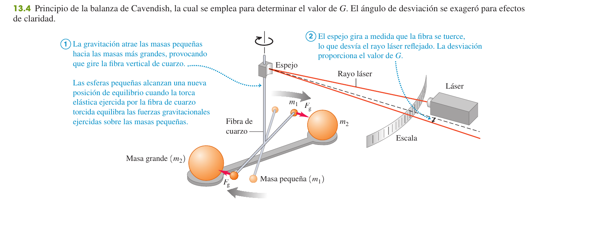
1.2 Cuerpos esféricos y superposición U p.399-400
Un cuerpo con distribución de masa esféricamente simétrica (la Tierra, la Luna, el Sol) atrae a cualquier cuerpo exterior a él como si toda su masa estuviera concentrada en su centro: $F_g=\dfrac{Gm_Tm}{r^2}$ con $r$ la distancia entre los centros. Esto nos permite tratar planetas y estrellas como «partículas» (la demostración está en §6). Si el cuerpo está dentro del otro, la fuerza se comporta distinto: disminuye al acercarse al centro y es cero en el centro exacto.
U p.399Si varios cuerpos atraen a uno, la fuerza total es la suma vectorial de las fuerzas que cada uno ejerce por separado (no hay «interferencias» entre ellas). En la práctica: calcular cada módulo con (13.1), descomponer en componentes y sumar.
U p.400Una estrella pequeña ($1{,}00\times10^{30}$ kg) está en el origen. Otra de $8{,}00\times10^{30}$ kg está en $(2{,}00\times10^{12}\text{ m},0)$ y otra igual en $(2{,}00\times10^{12}\text{ m},2{,}00\times10^{12}\text{ m})$ (triángulo rectángulo de 45°). Calcula la fuerza total sobre la pequeña.
- Las dos fuerzas. La estrella del eje $x$ está a $d=2{,}00\times10^{12}$ m: $F_2=\dfrac{G(8{,}00\times10^{30})(1{,}00\times10^{30})}{d^2}=1{,}33\times10^{26}$ N, hacia $+x$. La otra está a $\sqrt2\,d$: $F_1=\dfrac{G(8{,}00\times10^{30})(1{,}00\times10^{30})}{2d^2}=6{,}67\times10^{25}$ N, a $45^\circ$.
- Componentes. $F_{1x}=F_{1y}=F_1\cos45^\circ=4{,}72\times10^{25}$ N; $F_{2x}=1{,}33\times10^{26}$ N y $F_{2y}=0$.
- Suma. $F_x=1{,}81\times10^{26}$ N, $F_y=4{,}72\times10^{25}$ N ⇒ $F=\sqrt{F_x^2+F_y^2}=1{,}87\times10^{26}$ N, con ángulo $\theta=\arctan(F_y/F_x)=14{,}6^\circ$ sobre el eje $x$.
No hace falta recalcular con $G$: la fuerza es $\propto1/r^2$, así que si $r$ se multiplica por $n$, $F$ se divide entre $n^2$. Esto resuelve la mitad de las cuestiones cortas («¿qué pasa si la distancia se duplica?»).
P2Peso y aceleración de la gravedad U p.402-404
Tu peso es, simplemente, la fuerza con la que la Tierra te atrae. Entonces la ley de Newton te dice cuánto pesas en cualquier sitio: en la superficie, a 400 km de altura o en Marte. La altura importa porque cambia la distancia al centro de la Tierra: a doble distancia del centro, pesas la cuarta parte.
U p.402El peso de un cuerpo es la fuerza gravitacional total que actúa sobre él. En la superficie de la Tierra (masa $m_T$, radio $R_T$):
$$w=F_g=\frac{Gm_Tm}{R_T^2}\quad(13.3)\qquad\Longrightarrow\qquad g=\frac{Gm_T}{R_T^2}\quad(13.4)$$$g$ no depende de la masa $m$ del cuerpo (por eso todos caen igual). A una distancia $r\ge R_T$ del centro:
$$w=\frac{Gm_Tm}{r^2}\qquad(13.5)\qquad\text{y}\qquad g(r)=\frac{Gm_T}{r^2}$$El peso disminuye con el cuadrado de la distancia al centro de la Tierra. Despejando, la masa de la Tierra es $m_T=gR_T^2/G=5{,}96\times10^{24}$ kg: así «pesó» Cavendish el planeta.
U p.403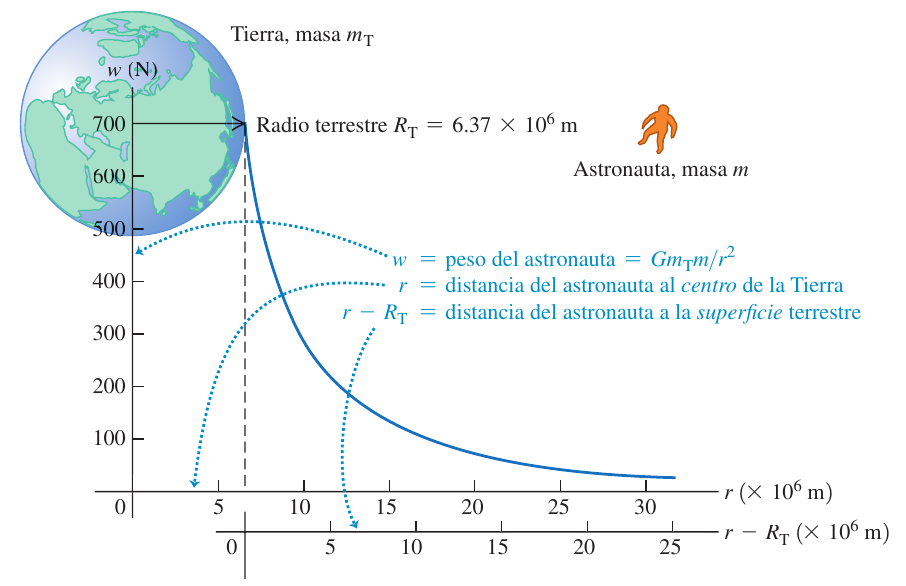
En $g=GM/r^2$, $r$ es la distancia al centro: $r=R+h$. Si te dan «a 400 km de altura», $r=6370+400=6770$ km, no 400 km. Otro error clásico: creer que el peso de un astronauta en órbita es cero porque flota; a 400 km el peso aún es el 89 % del de la superficie (flota por otra razón, §4).
PLa densidad media de un cuerpo esférico es $\rho=\dfrac{M}{V}=\dfrac{M}{\tfrac43\pi R^3}$. Para la Tierra: $V_T=1{,}08\times10^{21}$ m³ y $\rho=5500$ kg/m³ $=5{,}5$ g/cm³ (el agua tiene 1 g/cm³). Las rocas de la superficie tienen entre 2000 y 3300 kg/m³: el interior es mucho más denso que la corteza, así que la Tierra no es uniforme (según los modelos geofísicos, la densidad máxima, en el centro, es de unos 13 000 kg/m³). Sustituyendo $M=\rho\,\tfrac43\pi R^3$ en $g=GM/R^2$ se obtiene $g=\tfrac43\pi G\rho R$: con la misma densidad, $g\propto R$ (lo usaremos en el examen X2).
U p.404Un módulo de descenso que pesa 3430 N en la Tierra se envía a Marte ($R_M=3{,}39\times10^6$ m, $m_M=6{,}42\times10^{23}$ kg). ¿Cuál es su peso allí y cuánto vale $g_M$?
- La masa viaja con el módulo: $m=w/g=3430/9{,}80=350$ kg.
- Peso en Marte (13.3 con los datos de Marte): $F_g=\dfrac{G\,m_M m}{R_M^2}=\dfrac{(6{,}67\times10^{-11})(6{,}42\times10^{23})(350)}{(3{,}39\times10^6)^2}=1{,}30\times10^3$ N.
- $g_M=F_g/m=3{,}7$ m/s². Marte tiene el 11 % de la masa de la Tierra pero $g_M$ es el 40 %: el radio es el 53 %, y entra al cuadrado en el denominador.
3Energía potencial gravitacional U p.405-407
Hasta ahora usabas $U=mgy$, que supone que la gravedad es constante. Pero si te alejas mucho de la Tierra, $g$ disminuye, y la fórmula falla. Imagina que la Tierra es un pozo: cuanto más cerca del fondo (del centro), más «hundido» estás, es decir, más negativa es tu energía potencial; subir cuesta energía. Ese pozo es lo que mide $U(r)$, y su profundidad decide si un cohete puede escaparse o tiene que volver.
U p.405Cuando el cuerpo se mueve de $r_1$ a $r_2$ (medidas desde el centro de la Tierra), la gravedad ($F_r=-Gm_Tm/r^2$, ec. 13.7) hace un trabajo
$$W_{grav}=\int_{r_1}^{r_2}F_r\,dr=Gm_Tm\left(\frac1{r_2}-\frac1{r_1}\right)\qquad(13.8)$$que solo depende de $r_1$ y de $r_2$, no del camino: la fuerza gravitacional es conservativa. Entonces se define la energía potencial con $W_{grav}=U_1-U_2$, tomando $U=0$ en el infinito:
$$\boxed{\,U=-\frac{Gm_Tm}{r}\,}\qquad(13.9)$$$U$ es siempre negativa y aumenta (se hace menos negativa) al alejarse; si el cuerpo cae, la gravedad hace trabajo positivo y $U$ disminuye. Es la energía potencial del sistema Tierra-cuerpo. Solo importan las diferencias de $U$; elegir otro cero no cambia la física.
U p.405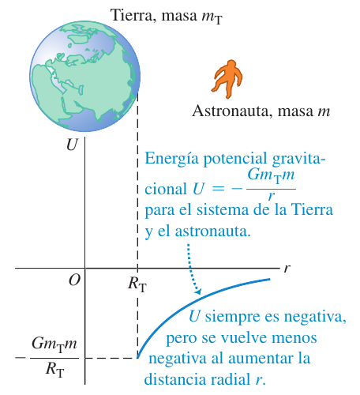
La fuerza gravitacional es proporcional a $1/r^2$, pero la energía potencial es proporcional a $1/r$ (y con signo menos). No las confundas al hacer cuentas: a doble distancia la fuerza se divide entre 4, pero $U$ solo entre 2.
U p.406Cerca de la superficie, $r_1\approx r_2\approx R_T$, y (13.8) se convierte en $W_{grav}\approx\dfrac{Gm_Tm}{R_T^2}(r_1-r_2)=mg(r_1-r_2)$: es la energía potencial de siempre, $U=mgy$, que es el caso particular de (13.9) para alturas pequeñas (con el cero en el suelo). Por eso para alturas del orden de 10 km se puede usar $mgy$ (error del 0,16 %), pero a $h=R_T$ el error sería del 50 %.
U p.406-407Si solo trabaja la gravedad, la energía mecánica $E=K+U=\tfrac12mv^2-\dfrac{Gm_Tm}{r}$ se conserva: $K_1+U_1=K_2+U_2$. La rapidez de escape es la rapidez mínima para llegar al infinito (donde $U=0$) con $K=0$; es decir, con $E=0$:
$$\tfrac12mv^2-\frac{GMm}{R}=0\ \Longrightarrow\ v_{esc}=\sqrt{\frac{2GM}{R}}$$No depende de la masa del cuerpo (la $m$ se simplifica) ni de la dirección de lanzamiento. Para la Tierra, $v_{esc}=1{,}12\times10^4$ m/s $=11{,}2$ km/s. En general: si $E\lt0$ el cuerpo está ligado (sube hasta un $r_{máx}$ y vuelve); si $E\ge0$ escapa.
U p.406Un proyectil sale de la superficie terrestre ($R_T=6{,}37\times10^6$ m, $m_T=5{,}97\times10^{24}$ kg), despreciando el aire y la rotación. a) ¿Qué rapidez inicial mínima necesita para subir hasta $r=2R_T$? b) ¿Y para escapar?
- Plan: solo trabaja la gravedad ⇒ $K_1+U_1=K_2+U_2$ con $U=-Gm_Tm/r$ y $K_2=0$ (en el punto más alto se para).
- a) $r_2=2R_T$: $\tfrac12mv_1^2-\dfrac{Gm_Tm}{R_T}=0-\dfrac{Gm_Tm}{2R_T}$ ⇒ $v_1=\sqrt{\dfrac{Gm_T}{R_T}}=7910$ m/s.
- b) $r_2=\infty$: $U_2=0$ y $K_2=0$ ⇒ $E=0$ ⇒ $v_1=\sqrt{\dfrac{2Gm_T}{R_T}}=1{,}12\times10^4$ m/s.
- Lectura: el resultado no depende de la masa del proyectil ni de la dirección del lanzamiento.
4Movimiento de satélites U p.407-410
Imagina un cañón en lo alto de una montaña que dispara horizontalmente. Con poca velocidad el proyectil cae cerca; con más, cae más lejos. Pero la Tierra es redonda: si la velocidad es suficiente, el suelo se curva tanto como cae el proyectil, y el proyectil «cae» alrededor de la Tierra sin llegar nunca al suelo. Eso es un satélite: un proyectil que cae sin parar y se pasa de largo. La gravedad no deja de actuar en ningún momento; lo que mantiene la órbita no es que la gravedad «desaparezca» sino la velocidad lateral.
U p.407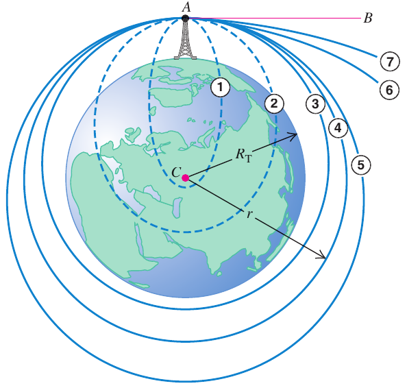
La única fuerza sobre el satélite (masa $m$) es la gravedad, y hace de fuerza centrípeta: $\dfrac{Gm_Tm}{r^2}=\dfrac{mv^2}{r}$ (segunda ley en el movimiento circular). De aquí:
$$v=\sqrt{\frac{Gm_T}{r}}\ \ (13.10)\qquad T=\frac{2\pi r}{v}=\frac{2\pi\,r^{3/2}}{\sqrt{Gm_T}}\ \ (13.11,\,13.12)$$Cuanto más alta es la órbita, más lenta es y mayor es su periodo; la rapidez no depende de la masa del satélite. La energía mecánica es
$$K=\tfrac12mv^2=\frac{Gm_Tm}{2r},\quad U=-\frac{Gm_Tm}{r},\quad \boxed{E=K+U=-\frac{Gm_Tm}{2r}}\qquad(13.13)$$Es negativa (sistema ligado) y se cumple $U=-2K$ y $E=-K$. Como $\vec F_g\perp\vec v$, la gravedad no hace trabajo en una órbita circular. Comparando con $v_{esc}=\sqrt{2Gm_T/r}$: $v_{esc}=\sqrt2\,v_{circ}$ a la misma distancia.
U p.408-409Los astronautas de la Estación Espacial (a unos 400 km) no están fuera del alcance de la gravedad: allí $g=8{,}7$ m/s², el 89 % del valor en el suelo. Flotan porque están en caída libre: la nave y el astronauta tienen la misma aceleración (hacia la Tierra), así que nada empuja al astronauta contra el suelo de la nave. Eso es la ingravidez aparente. La gravedad solo se anula a distancia infinita.
Esa ingravidez aparente no es exclusiva de las órbitas circulares: aparece siempre que la gravedad sea la única fuerza sobre la nave, también en órbitas elípticas y en las abiertas (parabólicas e hiperbólicas).
U p.408La ISS orbita a unos 6800 km del centro de la Tierra, con rapidez de unos 7,7 km/s y periodo de 93 min. Comprobación con (13.10) y (13.11): $v=\sqrt{Gm_T/r}=\sqrt{(6{,}67\times10^{-11})(5{,}97\times10^{24})/(6{,}8\times10^{6})}=7{,}65$ km/s y $T=2\pi r/v=5{,}58\times10^{3}$ s $=93{,}1$ min ✓.
U p.409Se quiere poner un satélite de 1000 kg en órbita circular a 300 km de altura. a) ¿Qué rapidez, periodo y aceleración radial tiene? b) ¿Cuánto trabajo hace falta para ponerlo en órbita (partiendo en reposo de la plataforma)? c) ¿Y para que escape después?
- Radio de la órbita desde el centro: $r=6370+300=6670$ km $=6{,}67\times10^6$ m.
- a) $v=\sqrt{Gm_T/r}=7730$ m/s; $T=2\pi r/v=5420$ s $=90{,}4$ min; $a_{rad}=v^2/r=8{,}96$ m/s² (es el valor de $g$ a esa altura).
- b) $E_2=-\dfrac{Gm_Tm}{2r}=-2{,}98\times10^{10}$ J en órbita; $E_1=-\dfrac{Gm_Tm}{R_T}=-6{,}25\times10^{10}$ J en reposo en el suelo. Trabajo $=E_2-E_1=3{,}27\times10^{10}$ J.
- c) Para escapar hace falta $E=0$: faltan $2{,}98\times10^{10}$ J más.
5Las leyes de Kepler y el movimiento de los planetas U p.410-414
Kepler (1601-1619), con las observaciones de Tycho Brahe, descubrió tres reglas sobre cómo se mueven los planetas, sin saber por qué. Newton demostró después que las tres son consecuencia de sus leyes del movimiento y de la gravitación. Las dos ideas prácticas: cuanto más cerca del Sol, más rápido va el planeta; y cuanto más lejos está la órbita, más tarda en recorrerla (mucho más: crece como $a^{3/2}$).
U p.410-411- Primera: cada planeta se mueve en una elipse con el Sol en uno de sus focos.
- Segunda: una recta del Sol a un planeta barre áreas iguales en tiempos iguales.
- Tercera: el periodo $T$ al cuadrado es proporcional al cubo del semieje mayor $a$.
5.1 Primera ley: la elipse U p.411
Una elipse tiene dos focos $S$ y $S'$: la suma de las distancias de cualquier punto a los dos focos es la misma. El semieje mayor $a$ es la mitad del eje más largo; la excentricidad $e$ ($0\le e\lt1$) mide cuánto se aleja un foco del centro: está a distancia $ea$ del centro. Con $e=0$ la elipse es un círculo. Con el Sol en $S$:
Se cumple $r_p+r_a=2a$. Las órbitas de los planetas son casi circulares (Tierra: $e=0{,}017$; Mercurio: $0{,}206$). Para una fuerza proporcional a $1/r^2$, las órbitas cerradas son elipses y las abiertas (cometas que no vuelven) son parábolas o hipérbolas.
U p.411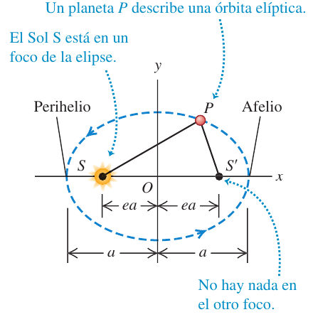
5.2 Segunda ley: áreas iguales = momento angular constante U p.411-412
En un tiempo corto $dt$ el radio vector barre un triángulo de área $dA=\tfrac12 r\,(r\,d\theta)$. La velocidad areolar es
$$\frac{dA}{dt}=\tfrac12r^2\frac{d\theta}{dt}=\tfrac12\,r\,v\sin\phi=\frac{|\vec r\times m\vec v|}{2m}=\frac{L}{2m}\qquad(13.14\text{-}13.16)$$Aquí $\phi$ es el ángulo entre el radio vector $\vec r$ (del Sol al planeta) y la velocidad $\vec v$.
Como la fuerza gravitacional es central (apunta siempre al Sol), su torca respecto al Sol es cero y el momento angular $\vec L$ es constante; por tanto $dA/dt$ es constante: eso es la segunda ley. Dos consecuencias: la órbita es plana, y el planeta va más rápido en el perihelio (donde $r$ es menor) y más lento en el afelio: en los ápsides (el perihelio y el afelio, los dos puntos donde $\vec r\perp\vec v$) $v\,r=\text{cte}$.
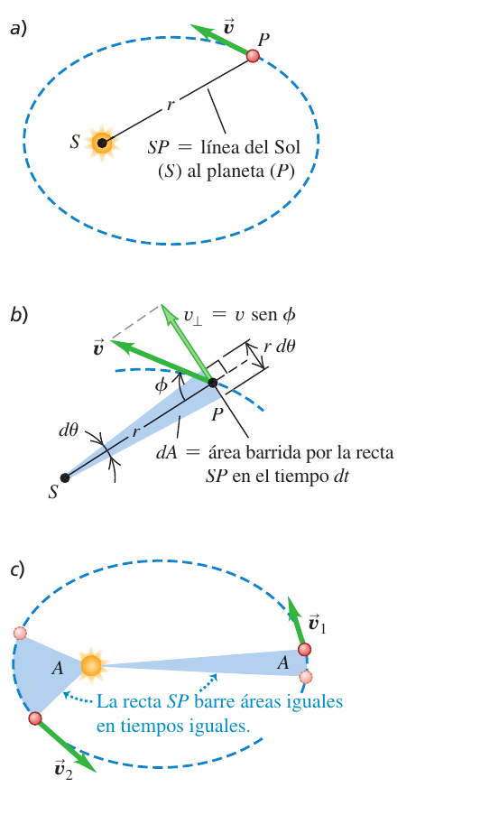
¿Dónde va más rápido un planeta? Por la segunda ley, donde está más cerca del Sol: en el perihelio (y más lento en el afelio). Por energía: en el perihelio $U=-GMm/r$ es más negativa, luego $K=E-U$ es mayor. Las dos explicaciones coinciden.
U p.4125.3 Tercera ley: $T^2\propto a^3$ U p.412
Para una órbita circular de radio $r$ la hemos deducido en §4: $T=2\pi r^{3/2}/\sqrt{Gm_S}$. Newton demostró que para una elipse vale lo mismo cambiando $r$ por el semieje mayor $a$:
$$T^2=\frac{4\pi^2}{Gm_S}\,a^3\qquad\Longleftrightarrow\qquad T=\frac{2\pi\,a^{3/2}}{\sqrt{Gm_S}}\qquad(13.17)$$El periodo no depende de la excentricidad ni de la masa del planeta, solo de $a$ y de la masa del Sol. Sirve también para pesar al astro central: con el $T$ y el $a$ de un satélite (o de una estrella orbitando), $m_X=4\pi^2a^3/(GT^2)$. Con más precisión, el Sol y el planeta giran ambos alrededor del centro de masa del sistema (en el sistema solar está muy cerca del centro del Sol).
U p.412Palas tiene un periodo de 4,62 años y excentricidad 0,233. Calcula su semieje mayor.
- De (13.17): $a=\left(\dfrac{Gm_ST^2}{4\pi^2}\right)^{1/3}$ con $T=(4{,}62)(3{,}156\times10^7)=1{,}46\times10^8$ s. La excentricidad no hace falta.
- $a=4{,}15\times10^{11}$ m: entre las órbitas de Marte y Júpiter (el cinturón de asteroides).
El Halley pasa a $8{,}75\times10^{7}$ km del Sol en el perihelio y a $5{,}26\times10^{9}$ km en el afelio. Calcula $a$, $e$ y $T$.
- Semieje mayor: $2a=r_p+r_a$ ⇒ $a=\dfrac{8{,}75\times10^{7}+5{,}26\times10^{9}}{2}=2{,}67\times10^{9}$ km $=2{,}67\times10^{12}$ m.
- Excentricidad: $r_p=a(1-e)$ ⇒ $e=1-\dfrac{r_p}{a}=1-\dfrac{8{,}75\times10^7}{2{,}67\times10^9}=0{,}967$ (órbita muy alargada).
- Periodo (13.17): $T=\dfrac{2\pi a^{3/2}}{\sqrt{Gm_S}}=2{,}38\times10^9$ s $=75{,}5$ años. Volverá al perihelio en 2061.
Para el Halley ($m=2{,}2\times10^{14}$ kg) halla $v_p$ y $v_a$ y las energías $K$, $U$ y $E$ en cada punto.
- Dos conservaciones: momento angular en los ápsides ($\vec r\perp\vec v$): $v_p\,r_p=v_a\,r_a$; energía: $\tfrac12v_p^2-\dfrac{Gm_S}{r_p}=\tfrac12v_a^2-\dfrac{Gm_S}{r_a}$.
- Resolver: $v_p=\sqrt{\dfrac{2Gm_S\,(1/r_p-1/r_a)}{1-(r_p/r_a)^2}}=5{,}46\times10^4$ m/s y $v_a=v_pr_p/r_a=909$ m/s.
- Energías: perihelio: $K_p=3{,}28\times10^{23}$ J, $U_p=-3{,}34\times10^{23}$ J; afelio: $K_a=9{,}08\times10^{19}$ J, $U_a=-5{,}55\times10^{21}$ J. En ambos $E=-5{,}46\times10^{21}$ J: la misma $E$ (negativa: sistema ligado), con $K$ y $U$ muy distintas.
- Forma general con $a$ y $e$. Con $r_p=a(1-e)$ y $r_a=a(1+e)$ el mismo resultado se escribe $v_p=\sqrt{\dfrac{Gm_S}{a}\,\dfrac{1+e}{1-e}}$ y $v_a=\sqrt{\dfrac{Gm_S}{a}\,\dfrac{1-e}{1+e}}$ (con $a=2{,}67\times10^{12}$ m y $e=0{,}967$ salen los mismos $5{,}46\times10^4$ y $909$ m/s). La energía total solo depende de $a$: $E=\tfrac12mv_p^2-\dfrac{Gm_Sm}{r_p}=-\dfrac{Gm_Sm}{2a}$, que para el Halley da $-5{,}46\times10^{21}$ J ✓ (es la 13.13 con $a$ en lugar de $r$).
- Prueba con un círculo: con $e=0$ las dos fórmulas dan $v_p=v_a=\sqrt{Gm_S/a}$ y $r_p=r_a=a$ ✓.
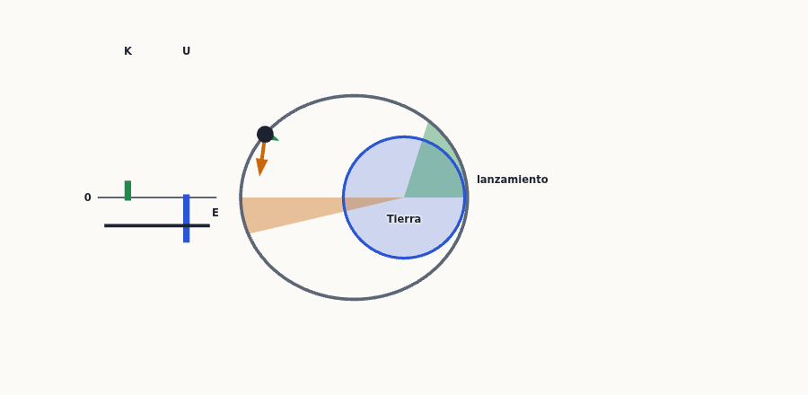
En todo lo anterior hemos supuesto el Sol en reposo. En realidad el Sol y cada planeta giran alrededor de su centro de masa común; como el Sol tiene unas 750 veces la masa de todos los planetas juntos, ese centro está cerca del centro del Sol y el error es pequeño. Los astrónomos aprovechan el efecto al revés: los telescopios más sensibles detectan el «bamboleo» de una estrella que gira alrededor del centro de masa común con un planeta que no se ve, y así descubren planetas fuera del Sistema Solar.
U p.4146Distribuciones esféricas de masa U p.414-417
Imagina un planeta formado por muchas capas esféricas concéntricas, como una cebolla. Newton demostró dos cosas sobre cada capa (un cascarón delgado): (1) fuera de ella, atrae como si toda su masa estuviera en el centro; (2) dentro de ella, no atrae: la fuerza total es cero (el trozo cercano tiene poca masa, pero está cerca; el lejano tiene más masa, pero está más lejos: la masa crece como $d^2$ y la fuerza decrece como $1/d^2$, así que se compensan exactamente). Por eso, dentro de un planeta, solo cuenta la masa que hay más cerca del centro que tú.
U p.414-416- Cascarón de masa $M$, punto exterior ($r\gt R$): $F=\dfrac{GMm}{r^2}$ y $U=-\dfrac{GMm}{r}$ (13.24), como una masa puntual en el centro.
- Punto interior ($r\lt R$): $U=-\dfrac{GMm}{R}$ es constante ⇒ la fuerza es cero (13.25-13.26).
- Esfera sólida: fuera, como puntual. Dentro, solo atrae la esfera de radio $r$ (la masa que hay por debajo de ti); las capas exteriores no contribuyen. Si la densidad es uniforme, la masa interior es $M\,(r/R)^3$ y $F_g=\dfrac{GMm\,r}{R^3}$: crece linealmente con $r$ (como un resorte), hasta valer $GMm/R^2$ en la superficie, y es nula en el centro.
Demostración del cascarón por anillos (opcional) U p.414-416
Cascarón de masa $M$ y radio $R$; punto $P$ a distancia $r$ del centro. Se corta el cascarón en anillos de ángulo $\phi$ (medido desde el eje que va al punto) y se suman sus energías potenciales.
- Un anillo. Todas sus partículas están a la misma distancia $s$ de $m$, así que $dU=-\dfrac{Gm\,dM}{s}$ (13.18).
- Su masa. El anillo tiene radio $R\sin\phi$ y ancho $R\,d\phi$: área $dA=2\pi R^2\sin\phi\,d\phi$. Como la masa es proporcional al área ($4\pi R^2$ en total): $\dfrac{dM}{M}=\tfrac12\sin\phi\,d\phi$ (13.19), luego $dU=-\dfrac{GMm}{2s}\sin\phi\,d\phi$ (13.20).
- Cambio de variable $\phi\to s$. Por Pitágoras, $s^2=r^2-2rR\cos\phi+R^2$ (13.21). Diferenciando: $2s\,ds=2rR\sin\phi\,d\phi$, es decir, $\sin\phi\,d\phi=\dfrac{s\,ds}{rR}$. Entonces $dU=-\dfrac{GMm}{2rR}\,ds$ (13.22).
- Integrar con $\phi$ de 0 a $\pi$. Si $P$ está fuera ($r\gt R$), $s$ va de $r-R$ a $r+R$: $U=-\dfrac{GMm}{2rR}\big[(r+R)-(r-R)\big]=-\dfrac{GMm}{r}$ (13.23-13.24).
- Si $P$ está dentro ($r\lt R$) todo igual, pero $s$ va de $R-r$ a $R+r$: $U=-\dfrac{GMm}{2rR}\big[(R+r)-(R-r)\big]=-\dfrac{GMm}{R}$ (13.25-13.26): no depende de $r$ ⇒ la fuerza $-dU/dr$ es cero.
Se abre un túnel por el centro de una Tierra supuesta de densidad uniforme (masa $m_T$, radio $R_T$). ¿Qué fuerza gravitacional siente un cuerpo de masa $m$ a una distancia $r\lt R_T$ del centro?
- Solo cuenta la esfera interior de radio $r$; su masa es $M=m_T\dfrac{V_r}{V_T}=m_T\left(\dfrac{r}{R_T}\right)^3$ (misma densidad ⇒ la masa es proporcional al volumen).
- Fuerza (13.2 aplicada a esa esfera): $F_g=\dfrac{GMm}{r^2}=\dfrac{Gm_Tm}{R_T^3}\,r$.
- Lectura: $F_g\propto r$ (no $1/r^2$), vale $Gm_Tm/R_T^2$ en la superficie y 0 en el centro.
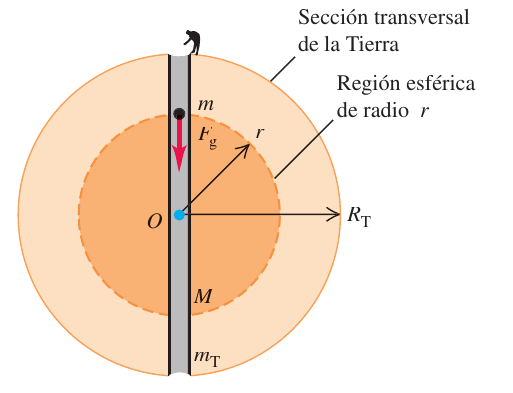
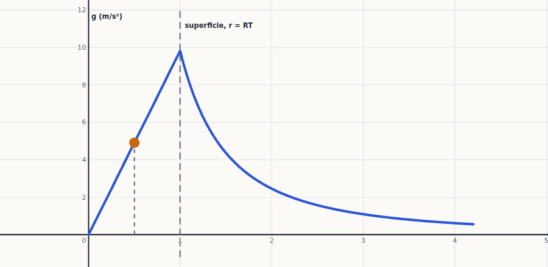
7Peso aparente y rotación terrestre U p.417-419
La Tierra gira, así que no es un sistema inercial. Quien está en el ecuador da una vuelta al día en un círculo grande: parte de la atracción de la Tierra «se gasta» en mantenerle en ese círculo (aceleración centrípeta), y la báscula bajo sus pies empuja un poco menos. En el polo, en cambio, solo gira sobre sí mismo (no describe ningún círculo), así que la báscula marca todo el peso. Compara con la sensación de ir en un coche que toma una curva: te «aplasta» a un lado; aquí el efecto es que te aligera.
U p.417El peso verdadero $\vec w_0$ es la fuerza gravitacional de la Tierra, de magnitud $Gm_Tm/R_T^2$ (es el mismo en toda la superficie de una Tierra esférica). El peso aparente $\vec w$ es lo que marca una báscula de resorte: la reacción a la fuerza $\vec F$ que la báscula ejerce sobre el cuerpo (es decir, $\vec w=-\vec F$). La «aceleración de la gravedad» $\vec g=\vec w/m$ es la del peso aparente: la aceleración con que cae un cuerpo visto desde la Tierra que gira. Sin rotación sería $\vec g_0=\vec w_0/m$.
U p.417-418En el polo, el cuerpo está en equilibrio en un sistema inercial: $F=w_0$, es decir, $w=w_0$ y $g=g_0$. En el ecuador, el cuerpo describe un círculo de radio $R_T$ con rapidez $v$ y debe haber una fuerza neta hacia dentro: $w_0-F=mv^2/R_T$. Por tanto
$$w=w_0-\frac{mv^2}{R_T}\quad(13.27)\qquad\Longrightarrow\qquad g=g_0-\frac{v^2}{R_T}=g_0-\omega^2R_T=g_0-\frac{4\pi^2R_T}{T^2}$$Para la Tierra ($T=86\,164$ s, el día sidéreo; en ese tiempo un punto del ecuador recorre $2\pi R_T$): $v=465$ m/s y $v^2/R_T=0{,}0339$ m/s². En latitudes intermedias $\vec w_0$ y $\vec a_{rad}$ no están en la misma recta y hay que restar vectorialmente: $\vec w=\vec w_0-m\vec a_{rad}$, $\vec g=\vec g_0-\vec a_{rad}$ (13.28); la diferencia de módulos está entre $0$ y $0{,}0339$ m/s².
U p.418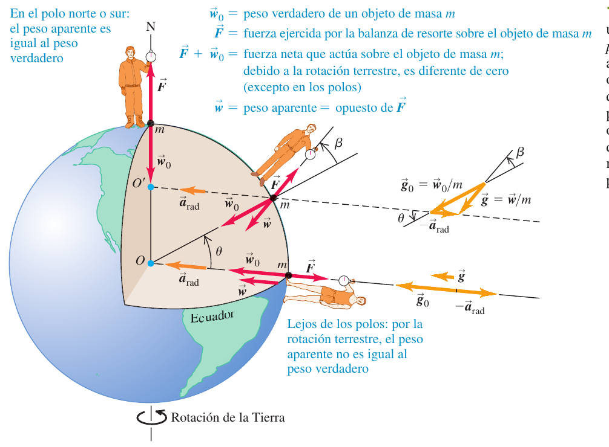
La gravedad real depende de la latitud (por la rotación), pero también de la elevación y de las diferencias de densidad del terreno. La tabla 13.1 de U recoge medidas en varias estaciones; la de menor latitud, la Zona del Canal (9° N, al nivel del mar), da $g=9{,}78243$ m/s², en línea con el valor algo menor cerca del ecuador que se calcula con $g=g_0-\omega^2R$.
U p.418- Sumar la centrípeta en vez de restarla: en el ecuador el suelo empuja menos, no más.
- Pensar que la diferencia depende de la masa del cuerpo: $g_0-g=\omega^2R$ es una aceleración, igual para todos.
- Olvidar pasar km a m y horas o días a segundos antes de calcular $\omega=2\pi/T$.
- Decir «no hay diferencia» sin calcular $\omega^2R$: lo que importa es su valor frente a $g_0$ (fracción $\omega^2R^3/GM$).
8Agujeros negros U p.419-422
Si comprimes una masa en un radio cada vez menor, la rapidez de escape de su superficie, $\sqrt{2GM/R}$, crece. Si el radio es tan pequeño que esa rapidez supera la de la luz, ni siquiera la luz puede salir: es un agujero negro. Ya en 1783 John Mitchell sugirió que una estrella con la densidad del Sol y 500 veces su radio no dejaría escapar la luz.
U p.419El Sol ($M=1{,}99\times10^{30}$ kg, $R=6{,}96\times10^{8}$ m) tiene una densidad media $\rho=\dfrac{M}{\tfrac43\pi R^3}=1410$ kg/m³, un 41 % más que el agua: la gravedad comprime el gas hasta ese valor. La rapidez de escape de su superficie (13.29) es $v=6{,}18\times10^{5}$ m/s (unos 2,2 millones de km/h), aproximadamente $c/500$, e independiente de la masa del cuerpo que escapa. A igual densidad $v\propto R$: un cuerpo con la densidad del Sol y un radio 500 veces mayor tendría $v\gt c$.
U p.419La rapidez de escape de la superficie de un cuerpo esférico de masa $M$, radio $R$ y densidad media $\rho$ es
$$v_{esc}=\sqrt{\frac{2GM}{R}}=\sqrt{\frac{8\pi G\rho}{3}}\;R\qquad(13.29)$$(a igual densidad, $v_{esc}\propto R$). Imponiendo $v_{esc}=c$ se obtiene el radio de Schwarzschild (el resultado correcto lo da la relatividad general de Einstein, que coincide con este cálculo):
$$R_S=\frac{2GM}{c^2}\qquad(13.30)$$Un cuerpo esférico sin rotación de masa $M$ cuyo radio es menor que $R_S$ es un agujero negro. La superficie de la esfera de radio $R_S$ es el horizonte de eventos: nada de lo que ocurre dentro puede verse desde fuera. Lejos del agujero negro, su gravedad es la de cualquier cuerpo con la misma masa: si el Sol se convirtiera en agujero negro, las órbitas de los planetas no cambiarían.
U p.419-420Igualar $v=c$ en la 13.29 da el $R_S$ correcto, pero por coincidencia: dos errores se compensan, pues la energía de la luz no es $\tfrac12mc^2$ y la energía potencial cerca de un agujero negro no es la 13.9. Schwarzschild (1916) lo dedujo con la relatividad general y el resultado es el mismo.
Un observador exterior solo puede conocer tres cosas del agujero negro: su masa (por su efecto gravitacional), su carga eléctrica (por las fuerzas eléctricas) y su momento angular (un agujero que gira arrastra el espacio a su alrededor). Cualquier otra información se pierde al colapsar dentro del horizonte.
U p.420-421Una estrella de al menos tres masas solares ($M=6{,}0\times10^{30}$ kg) puede colapsar en un agujero negro. ¿Qué radio tendría su horizonte?
- $R_S=\dfrac{2GM}{c^2}=\dfrac{2(6{,}67\times10^{-11})(6{,}0\times10^{30})}{(3{,}00\times10^{8})^2}=8{,}9\times10^3$ m $=8{,}9$ km.
- Densidad media dentro de ese radio: $\rho=M/(\tfrac43\pi R_S^3)=2{,}0\times10^{18}$ kg/m³, comparable a la de un núcleo atómico (unas $10^{15}$ veces la de la materia ordinaria de la Tierra).
Una vez la masa está dentro de $R_S$, nada impide que siga colapsando: toda ella se comprime en un punto de volumen cero, la singularidad, con densidad infinita. Lejos del agujero, su gravedad es la de cualquier cuerpo de la misma masa; cerca, no. Si te lanzaras hacia él, los que se quedaran atrás verían:
- Corrimiento gravitacional al rojo: tendrían que sintonizar tu radio a frecuencias cada vez más bajas.
- Dilatación del tiempo: tus relojes (y tu cuerpo) irían cada vez más lentos; no les alcanzaría la vida para verte llegar al horizonte.
Tú, en tu sistema de referencia, llegarías al horizonte en un tiempo muy corto, pero no entero: cayendo con los pies por delante, la atracción sobre los pies sería mayor que sobre la cabeza. Esas diferencias de fuerza (fuerzas de marea) te estirarían hacia el agujero y te comprimirían en la dirección perpendicular, desgarrando tus átomos antes de llegar al horizonte.
U p.421El gas cercano forma un disco de acreción que gira y cae en espiral; la fricción lo calienta a más de $10^6$ K y emite rayos X. Además, las estrellas que orbitan en torno a un objeto invisible permiten calcular su masa con la tercera ley de Kepler: en el centro de nuestra galaxia, estrellas que giran a más de 1500 km/s alrededor de Sgr A* indican un objeto de $8{,}2\times10^{36}$ kg ($4{,}1$ millones de masas solares) y no mayor de $4{,}4\times10^{10}$ m de radio, compatible con un agujero negro supermasivo de $R_S=2GM/c^2=1{,}2\times10^{10}$ m.
U p.421-4229Ejercicios resueltos
Primero los seis ejercicios de examen real (X1-X6), que son los que cuentan; después los problemas del solucionario (E1-E13) ordenados como la teoría. Los números están comprobados: $G=6{,}67\times10^{-11}$ N·m²/kg² salvo cuando el enunciado da otro valor. En las preguntas de teoría el «desarrollo modelo» está en una caja aparte (sirve para las dos convocatorias que repiten el mismo tema) y cada una lleva sus dos cuestiones cortas resueltas. Antes de abrir cada solución, intenta plantearlo tú.
9.1 Ejercicios de examen real (X)
X1 — Gravedad en el polo y en el ecuador de Titán y de Marte X U p.403, 418
Titán, la mayor luna de Saturno, tiene una masa de $1{,}35\times10^{23}$ kg y un radio medio de $2{,}57\times10^{3}$ km. Titán tiene un periodo de giro sobre sí mismo síncrono, esto es, el periodo orbital y de rotación es el mismo como ocurre con nuestra Luna, y su valor es 15 días, 22 horas y 41 minutos. Por otro lado, el planeta Marte tiene una masa de $6{,}42\times10^{23}$ kg, un radio medio de $3{,}39\times10^{3}$ km y su periodo de rotación es 24,6 horas. Conocidos estos datos: (a) Calcular la aceleración de la gravedad en el polo norte de Titán. (b) Calcular la aceleración de la gravedad en el ecuador de Titán. (c) Calcular la aceleración de la gravedad en el polo norte y en el ecuador de Marte. (d) Comentar por qué en un caso las diferencias de gravedad entre el polo norte y el ecuador son apreciables y en el otro no. Considere: $G=6{,}672\times10^{-11}\ \text{m}^3\text{kg}^{-1}\text{s}^{-2}$.
- Qué se pide de verdad. «Aceleración de la gravedad» en un punto de la superficie de un cuerpo que gira es la aceleración con la que cae un objeto soltado allí, vista desde el cuerpo que gira: $g=w/m$ con $w$ el peso aparente (§7). No es lo mismo que $g_0=GM/R^2$ salvo en los polos.
- Modelo. Titán y Marte son esferas con simetría esférica ⇒ atraen como si toda su masa estuviera en el centro (13.2): $g_0=GM/R^2$ (13.4).
- Polo norte. El objeto está sobre el eje de giro: no describe ningún círculo, su aceleración es nula, y el soporte equilibra todo el peso verdadero: $g_{polo}=g_0=\dfrac{GM}{R^2}$.
- Ecuador. El objeto describe un círculo de radio $R$ con el periodo $T$ del cuerpo: aceleración centrípeta $a_{rad}=\omega^2R=\dfrac{4\pi^2R}{T^2}$ hacia el centro. Segunda ley en la dirección radial: $w_0-F=ma_{rad}$ ⇒ $g_{ec}=g_0-\omega^2R$ (13.27). En el ecuador $\vec w_0$ y $\vec a_{rad}$ son paralelos, así que la resta es escalar.
- Datos en SI (¡km a m, días y horas a s!). Titán: $R=2{,}57\times10^6$ m; $T=15\cdot86\,400+22\cdot3600+41\cdot60=1\,377\,660$ s. Marte: $R=3{,}39\times10^6$ m; $T=24{,}6\cdot3600=88\,560$ s.
- (a) Polo de Titán: $g_0=\dfrac{(6{,}672\times10^{-11})(1{,}35\times10^{23})}{(2{,}57\times10^6)^2}=\mathbf{1{,}364\ m/s^2}$.
- (b) Ecuador de Titán: $\omega=2\pi/T=4{,}561\times10^{-6}$ rad/s ($v=\omega R=11{,}7$ m/s); $\omega^2R=5{,}35\times10^{-5}$ m/s². $g_{ec}=1{,}36371-0{,}00005=\mathbf{1{,}3637\ m/s^2}$: con tres cifras, igual que en el polo (1,36 m/s²); la diferencia es del 0,004 %.
- (c) Marte. Polo: $g_0=\dfrac{(6{,}672\times10^{-11})(6{,}42\times10^{23})}{(3{,}39\times10^6)^2}=\mathbf{3{,}727\ m/s^2}$. Ecuador: $\omega=7{,}095\times10^{-5}$ rad/s ($v=240{,}5$ m/s), $\omega^2R=0{,}01706$ m/s² ⇒ $g_{ec}=3{,}7273-0{,}0171=\mathbf{3{,}710\ m/s^2}$. La diferencia (0,46 %) ya se ve en la tercera cifra: 3,73 frente a 3,71.
- (d) Comentario. La diferencia polo-ecuador es exactamente la aceleración centrípeta del ecuador, $\Delta g=\omega^2R=4\pi^2R/T^2$, que depende del cuadrado de la velocidad de giro. Titán tarda $1\,377\,660/88\,560=15{,}6$ veces más que Marte en dar una vuelta: su $\omega^2$ es unas 242 veces menor, y su radio es algo menor (0,76 veces); en total $\Delta g$ es unas 319 veces menor ($5{,}3\times10^{-5}$ frente a $1{,}7\times10^{-2}$ m/s²). Lo que decide si se «nota» es la fracción $\Delta g/g_0=\omega^2R^3/(GM)$: $3{,}9\times10^{-5}$ en Titán (inapreciable) y $4{,}6\times10^{-3}$ en Marte (apreciable, del orden de la Tierra: $0{,}0339/9{,}8=0{,}35$ %). Titán gira tan despacio porque su rotación está sincronizada con su órbita de casi 16 días alrededor de Saturno.
- Comprobación de órdenes de magnitud. $g_{Marte}=3{,}7$ m/s² coincide con el ejemplo 13.4 de U (mismos $M$ y $R$); Marte gira casi tan rápido como la Tierra pero es más pequeño ⇒ $\Delta g$ algo menor que el terrestre (0,017 frente a 0,034 m/s²) ✓.
(i) Dejar $R$ en km (sale $g$ un millón de veces mayor). (ii) Sumar la centrípeta en lugar de restarla: en el ecuador el suelo empuja menos. (iii) Usar el periodo orbital de Saturno o la distancia Titán-Saturno: no intervienen (solo cuenta el periodo de rotación). (iv) Dar $g_{ec}$ con 3 cifras y concluir «no hay diferencia» sin calcular $\omega^2R$.
Desarrollo modelo del tema «Ley de Newton de la gravitación» (para X2 y X3) U p.398-406
Extensión orientativa: una cara. Lo que no puede faltar está en negrita.
- Enunciado (U p. 398). Toda partícula de materia del universo atrae a todas las demás con una fuerza directamente proporcional al producto de sus masas e inversamente proporcional al cuadrado de la distancia que las separa: $F_g=\dfrac{Gm_1m_2}{r^2}$ (13.1).
- Dirección y tercera ley. La fuerza actúa a lo largo de la recta que une las partículas y es siempre atractiva; las fuerzas de 1 sobre 2 y de 2 sobre 1 forman un par acción-reacción: misma magnitud, sentido opuesto, aunque las masas sean distintas. En forma vectorial: $\vec F_{2\text{ sobre }1}=-\dfrac{Gm_1m_2}{r^2}\hat r_{21}$. Consecuencia: al caer una persona, la Tierra también «sube» hacia ella, pero con una aceleración unas $10^{-23}$ veces menor.
- La constante $G$. Es universal, la misma para cualquier par de cuerpos: $G=6{,}67\times10^{-11}$ N·m²/kg². Se midió con la balanza de torsión de Cavendish (1798). No confundir con $g$, que es una aceleración y cambia de un lugar a otro. Lo pequeño de $G$ explica que entre objetos cotidianos la fuerza sea insignificante ($1{,}33\times10^{-10}$ N entre esferas de 10 g y 0,5 kg a 5 cm) y que solo se note cuando una de las masas es astronómica.
- Superposición. Si varios cuerpos atraen a uno, la fuerza total es la suma vectorial de las fuerzas de cada uno.
- Cuerpos esféricos. Un cuerpo con distribución de masa esféricamente simétrica atrae a los exteriores como si toda su masa estuviera en su centro ($F_g=Gm_Tm/r^2$, 13.2). Dentro de él solo cuenta la masa más cercana al centro que el punto: en el centro de la Tierra la fuerza es nula.
- Peso y $g$. El peso es la fuerza gravitacional sobre un cuerpo. En la superficie $w=\dfrac{Gm_Tm}{R_T^2}$ ⇒ $g=\dfrac{Gm_T}{R_T^2}$ (13.4): no depende de la masa del cuerpo; despejando, $m_T=gR_T^2/G=5{,}96\times10^{24}$ kg. Por encima de la superficie $w=Gm_Tm/r^2$ (13.5): el peso disminuye con el cuadrado de la distancia al centro.
- Alcance y aplicaciones. La gravitación domina a escala astronómica porque actúa a distancia y no se neutraliza (la materia es eléctricamente neutra). De ella salen la energía potencial $U=-Gm_Tm/r$ (13.9), las órbitas de satélites $v=\sqrt{Gm_T/r}$ (13.10) y las leyes de Kepler.
- Fórmulas para la cuartilla: (13.1), (13.4), (13.5), (13.9), (13.10), (13.12).
X2 — Teoría: «Ley de Newton de la gravitación» + (a) ¿cuándo atraigo más al Sol? (b) $g$ frente a $R$ X U p.399-404
Desarrolle el tema: Ley de Newton de la gravitación. Además, responda a las siguientes cuestiones: (a) ¿Cuándo atraigo más al sol, a mediodía o a medianoche? Razone la respuesta. (b) Si todos los planetas tuvieran la misma densidad, ¿cómo dependería la gravedad en su superficie del radio del planeta?
Tema: usa el desarrollo modelo de la caja anterior.
Cuestión (a).
- Por la tercera ley la fuerza con la que yo atraigo al Sol tiene la misma magnitud que la que el Sol ejerce sobre mí: basta ver cuándo es mayor $F=\dfrac{Gm_Sm}{d^2}$.
- A mediodía estoy en la cara de la Tierra que mira al Sol: $d\approx d_{TS}-R_T$. A medianoche, en la cara opuesta: $d\approx d_{TS}+R_T$. $F$ decrece con $d$ ⇒ atraigo más al Sol a mediodía.
- Cuánto: $\dfrac{F_{día}}{F_{noche}}=\left(\dfrac{d_{TS}+R_T}{d_{TS}-R_T}\right)^2\approx1+\dfrac{4R_T}{d_{TS}}=1{,}00017$ (con $d_{TS}=1{,}50\times10^{11}$ m y $R_T=6{,}37\times10^6$ m): una diferencia del 0,017 %.
- No lo notamos: la atracción del Sol sobre una persona da $Gm_S/d_{TS}^2=5{,}9\times10^{-3}$ m/s², y la Tierra entera cae hacia el Sol con prácticamente esa misma aceleración, así que respecto a la Tierra solo queda la pequeñísima diferencia entre las dos caras (misma idea que la ingravidez aparente de §4).
Cuestión (b).
- $g=\dfrac{GM}{R^2}$ (13.4 aplicada al planeta) y $M=\rho V=\rho\,\tfrac43\pi R^3$ (densidad media).
- Sustituyendo: $g=\dfrac{G\rho\,\tfrac43\pi R^3}{R^2}=\mathbf{\tfrac43\pi G\rho R}$ ⇒ con la misma densidad, $g$ es proporcional al radio: un planeta de doble radio tendría doble gravedad superficial (su masa sería 8 veces mayor, pero el $R^2$ del denominador se «come» un factor 4).
- Comprobación con la Tierra ($\rho=5500$ kg/m³): $\tfrac43\pi(6{,}67\times10^{-11})(5500)(6{,}37\times10^6)=9{,}79$ m/s² ✓. (La rapidez de escape también es $\propto R$ a densidad fija: 13.29.)
(a) Pensar que la respuesta depende de la masa (la mía es la misma) o del «sentido» de la atracción; olvidar la tercera ley (la pregunta es cuánto atraigo yo al Sol). (b) Decir que $g\propto M$ «luego $\propto R^3$», olvidando el $1/R^2$.
X3 — Teoría: «Ley de Newton de la gravitación» + trabajo neto en una órbita circular y en una elíptica X U p.405-412
Desarrolle el tema: Ley de Newton de la gravitación. Además, responda a las siguientes cuestiones: (a) Un planeta se mueve con velocidad constante en una órbita circular alrededor de su estrella. ¿Cuál es el trabajo neto que ejerce su estrella sobre el planeta al describir una órbita completa? Razone la respuesta. (b) En el caso anterior si la órbita fuera elíptica en lugar de circular, la velocidad no podría ser constante en cada momento. ¿Cuál es el trabajo neto que ejerce su estrella sobre el planeta al describir una órbita completa? ¿Qué diferencia habría en relación con el caso de la órbita circular? Razone la respuesta.
Tema: el mismo desarrollo modelo de «Ley de Newton de la gravitación» (caja anterior, X2). Aquí «velocidad constante» significa rapidez constante; el vector velocidad cambia de dirección.
Cuestión (a).
- La única fuerza es la gravitacional de la estrella, dirigida hacia el centro de la órbita (radial); la velocidad es tangente al círculo ⇒ $\vec F\perp\vec v$ en todo instante.
- Trabajo elemental $dW=\vec F\cdot d\vec s=F\,ds\cos90^\circ=0$: la fuerza no hace trabajo en ningún tramo ⇒ $W_{órbita}=0$.
- Coherente con trabajo-energía: $W_{tot}=\Delta K=0$ porque la rapidez no cambia; y con la energía potencial: $r$ no cambia ⇒ $U=-GMm/r$ no cambia ⇒ $W=U_1-U_2=0$.
Cuestión (b).
- Trabajo neto en una vuelta = 0 también. La gravedad es conservativa: su trabajo entre dos puntos solo depende de $r$ inicial y final, $W=Gm_Sm\left(\dfrac1{r_2}-\dfrac1{r_1}\right)$ (13.8). En una órbita completa el planeta vuelve al mismo punto ($r_2=r_1$) ⇒ $W=0$. Equivalentemente: vuelve con la misma rapidez ⇒ $\Delta K=0$.
- La diferencia está en los tramos. En la elipse la fuerza (hacia el Sol, en un foco) no es perpendicular a la velocidad salvo en el perihelio y el afelio. Del afelio al perihelio ($r$ disminuye) la fuerza tiene componente a favor de la velocidad ⇒ trabajo positivo, $W=Gm_Sm(1/r_p-1/r_a)\gt0$, y el planeta acelera; del perihelio al afelio el trabajo es negativo, igual en valor absoluto, y el planeta frena. Se compensan exactamente.
- Resumen: en el círculo $W=0$ instante a instante (y $K$ constante); en la elipse $W\ne0$ en cada media órbita y solo es cero en la vuelta completa (la energía pasa de cinética a potencial y vuelve; $E$ constante).
- Número de ejemplo (Halley, problema práctico de U): del afelio al perihelio la gravedad del Sol hace $W=K_p-K_a=3{,}28\times10^{23}$ J, y lo mismo con signo menos a la vuelta.
Responder «$W=F\cdot2\pi r$» (la fuerza no tiene la dirección del desplazamiento), o «$W\ne0$ en la elipse porque la velocidad cambia» (cambia dentro de la vuelta, pero vuelve al valor inicial).
Desarrollo modelo del tema «Energía potencial gravitacional» (para X4 y X5) U p.405-409
- Por qué hace falta una expresión nueva (U p. 405). $U=mgy$ supone una fuerza gravitatoria constante, pero $F_g=Gm_Tm/r^2$ depende de $r$: lejos de la superficie hay que rehacer la cuenta.
- Trabajo de la gravedad al pasar de $r_1$ a $r_2$: con $F_r=-Gm_Tm/r^2$ (13.7), $W_{grav}=\displaystyle\int_{r_1}^{r_2}F_r\,dr=Gm_Tm\left(\dfrac1{r_2}-\dfrac1{r_1}\right)$ (13.8). Solo depende de $r_1$ y $r_2$, no del camino ⇒ la fuerza gravitacional es conservativa.
- Definición. Se define $U$ con $W_{grav}=U_1-U_2$ ⇒ $U=-\dfrac{Gm_Tm}{r}$ (13.9), con $U=0$ en $r=\infty$. Es la energía potencial del sistema Tierra-cuerpo.
- Signo y forma (fig. 13.11). $U$ es siempre negativa y aumenta (se hace menos negativa) al alejarse: si el cuerpo sube, la gravedad hace trabajo negativo y $U$ crece; si cae, trabajo positivo y $U$ disminuye. La elección del cero es libre (solo importan las diferencias). Cuidado: $F\propto1/r^2$ pero $U\propto1/r$.
- Relación con $mgy$. Cerca de la superficie, $r_1\approx r_2\approx R_T$ ⇒ $W_{grav}\approx\dfrac{Gm_Tm}{R_T^2}(r_1-r_2)=mg(r_1-r_2)$: $U=mgy$ es el caso particular de (13.9) para alturas pequeñas.
- Conservación de la energía y escape. Si solo actúa la gravedad, $K+U$ se conserva. Rapidez de escape: $\tfrac12mv^2-\dfrac{GMm}{R}=0$ ⇒ $v_{esc}=\sqrt{2GM/R}=1{,}12\times10^4$ m/s en la Tierra, sin depender de la masa del cuerpo ni de la dirección de lanzamiento.
- Órbitas. En órbita circular $E=-\dfrac{Gm_Tm}{2r}$ (13.13): energía negativa = sistema ligado. $E\lt0$ ⇒ el cuerpo no puede alejarse indefinidamente; $E\ge0$ ⇒ puede llegar al infinito.
X4 — Teoría: «Energía potencial gravitatoria» + (a) ¿fuera del alcance de la gravedad? (b) energía mecánica de un proyectil X U p.405-408
3.2.- Energía potencial gravitatoria. 3.2a) ¿Es cierto que un astronauta en órbita está fuera del alcance de la gravedad terrestre? ¿A qué distancia tendría que viajar una nave para estar fuera del alcance de la gravedad terrestre? Explique ambas respuestas. 3.2b) Si se lanza un proyectil verticalmente hacia arriba desde la superficie terrestre, ¿Qué pasa si la energía mecánica total es menor o mayor que cero? Desprecie la resistencia del aire y los efectos gravitacionales del Sol, la Luna y resto de planetas.
Tema: usa el desarrollo modelo de «Energía potencial gravitacional» (caja anterior). Véase también el tema 7 (conservación de la energía).
Cuestión 3.2a).
- No es cierto. La Estación Espacial está a unos 400 km de altura: $r=6770$ km del centro, y allí $g=g_0\left(\dfrac{R_T}{r}\right)^2=9{,}81\left(\dfrac{6370}{6770}\right)^2=8{,}7$ m/s², un 89 % del valor en el suelo (13.5).
- Por qué flotan. Están en caída libre: la gravedad es la única fuerza y da a la nave y al astronauta la misma aceleración centrípeta, así que nada empuja al astronauta contra el piso: ingravidez aparente. Sin gravedad no habría órbita: la nave seguiría en línea recta (primera ley) y se alejaría.
- ¿A qué distancia desaparece? A ninguna distancia finita: $F_g=Gm_Tm/r^2$ disminuye con $r$ pero solo se anula cuando $r\to\infty$. Ejemplo: a la distancia de la Luna (384 000 km), $g_T=2{,}7\times10^{-3}$ m/s², pequeñísima pero suficiente para mantener a la Luna en órbita.
Cuestión 3.2b).
- Planteamiento. Solo actúa la gravedad (conservativa) ⇒ $E=\tfrac12mv^2-\dfrac{GMm}{r}$ se conserva. Al subir, $r$ aumenta, $U$ aumenta y $K$ disminuye.
- $E\lt0$: como $K\ge0$, siempre debe ser $-GMm/r\le E\lt0$, es decir, $r\le r_{máx}=\dfrac{GMm}{|E|}$. El proyectil sube hasta $r_{máx}$ (donde $K=0$), se para y vuelve a caer: queda ligado a la Tierra. Ejemplo (ejemplo 13.5a): con $v_0=7910$ m/s, $E=-\dfrac{GMm}{2R_T}$ y $r_{máx}=2R_T$.
- $E\gt0$: al crecer $r$, $U\to0^-$ y $K=E-U$ nunca llega a cero: el proyectil escapa y llega «al infinito» con rapidez residual $v_\infty=\sqrt{2E/m}\gt0$.
- Caso límite $E=0$: lanzamiento justo con la rapidez de escape $v_0=\sqrt{2GM/R_T}=11{,}2$ km/s; llega al infinito con $v\to0$.
(a) Decir que en órbita «no hay gravedad» o que basta salir de la atmósfera. (b) Usar $U=mgh$ en estas preguntas: con $mgh$ siempre habría una altura máxima finita y no existiría la rapidez de escape.
X5 — Teoría: «Energía potencial gravitacional» + (a) $U=mgh$ y $U=G\,Mm/r$ (b) trabajo Malvarrosa-Barceloneta X U p.405-407
Desarrolle el tema: Energía potencial gravitacional. Además, responda a las siguientes cuestiones: (a) Explique la relación que hay entre las siguientes expresiones de la energía potencial ($U$), aplicadas al planeta tierra (masa $M$) y a un objeto (masa $m$) y el motivo por el que en la primera expresión $U$ crece con la altura ($h$) mientras que en la segunda disminuye con la distancia del objeto al centro de la Tierra ($r$): $U=mgh$ (1); $U=G\dfrac{Mm}{r}$ (2). Siendo $G$ la constante de gravitación universal. (b) Explique cuál sería el trabajo resultante para ir desde la playa de la Malvarrosa en Valencia a la Barceloneta en Barcelona. No considere la acción de fuerzas no conservativas.
Tema: desarrollo modelo de «Energía potencial gravitacional» (arriba, X4). Véase también el tema 7 (X8) y el tema 6.
Cuestión (a).
- La expresión general es $U=-\dfrac{GMm}{r}$ (13.9), con el cero en el infinito. El valor $GMm/r$ que aparece en (2) es su valor absoluto, que efectivamente disminuye con $r$; pero como la energía potencial es negativa, $U$ aumenta con $r$ (se hace menos negativa, fig. 13.11). Las dos expresiones dicen lo mismo: alejarse de la Tierra aumenta la energía potencial (la gravedad hace trabajo negativo).
- Relación. (1) es la aproximación de $U=-GMm/r$ para alturas pequeñas, con otro cero: $\Delta U=U(R_T+h)-U(R_T)=GMm\left(\dfrac1{R_T}-\dfrac1{R_T+h}\right)=\dfrac{GMm\,h}{R_T(R_T+h)}\approx\dfrac{GM}{R_T^2}\,m\,h=mgh$ si $h\ll R_T$.
- Diferencias. (1) toma $U=0$ en la superficie ($h=0$) y supone $g$ constante; $U=-GMm/r$ toma $U=0$ en el infinito y vale a cualquier distancia. El error de $mgh$ es el factor $R_T/(R_T+h)$: un 0,16 % a 10 km de altura, pero un 50 % a $h=R_T$.
Cuestión (b).
- Ambas playas están a nivel del mar: en el modelo de Tierra esférica, a la misma distancia $r=R_T$ del centro.
- La gravedad es conservativa ⇒ su trabajo solo depende de los puntos inicial y final: $W_{grav}=U_1-U_2=-\dfrac{GMm}{R_T}+\dfrac{GMm}{R_T}=\mathbf{0}$, sea cual sea el camino (por la costa, por el interior, subiendo puertos…).
- Sin fuerzas no conservativas, el trabajo resultante es el de la gravedad (la normal es siempre perpendicular al suelo y, por tanto, al desplazamiento ⇒ no hace trabajo) ⇒ $W_{tot}=0$, coherente con $W_{tot}=\Delta K=0$ si se sale y se llega en reposo.
Decir que las dos expresiones son contradictorias («una crece y otra decrece»); olvidar el signo menos de la energía potencial general.
Desarrollo modelo del tema «Las leyes de Kepler y el movimiento de los planetas» (para X6) U p.410-414
- Las tres leyes (U p. 411), empíricas, obtenidas por Kepler con los datos de Tycho Brahe: (1) cada planeta describe una elipse con el Sol en uno de sus focos; (2) la recta Sol-planeta barre áreas iguales en tiempos iguales; (3) el cuadrado del periodo es proporcional al cubo del semieje mayor. Newton demostró que son consecuencia de sus leyes del movimiento y de la gravitación.
- Primera ley. Elipse de semieje mayor $a$ y excentricidad $e$ ($0\le e\lt1$; $e=0$ es un círculo); focos a distancia $ea$ del centro; perihelio $r_p=a(1-e)$ y afelio $r_a=a(1+e)$. Las órbitas planetarias son casi circulares (Tierra: $e=0{,}017$). Para una fuerza $\propto1/r^2$, las órbitas cerradas son elipses y las abiertas, parábolas o hipérbolas.
- Segunda ley = conservación del momento angular. Área barrida en $dt$: $dA=\tfrac12r^2d\theta$ ⇒ $\dfrac{dA}{dt}=\tfrac12rv\sin\phi=\dfrac{L}{2m}$. La fuerza gravitacional es central (apunta al Sol) ⇒ torca $\vec r\times\vec F=0$ ⇒ $\vec L$ constante ⇒ velocidad areolar constante. Además $\vec L$ fijo en dirección ⇒ la órbita es plana. Consecuencia: el planeta va más rápido en el perihelio y más lento en el afelio (también por energía: $U$ mínima ⇒ $K$ máxima).
- Tercera ley. Para una órbita circular: $\dfrac{GMm}{r^2}=\dfrac{mv^2}{r}$ y $v=\dfrac{2\pi r}{T}$ ⇒ $T=\dfrac{2\pi r^{3/2}}{\sqrt{GM}}$. Newton la extendió a la elipse cambiando $r$ por $a$: $T^2=\dfrac{4\pi^2}{Gm_S}a^3$ (13.17). No depende de la excentricidad ni de la masa del planeta, solo de la del Sol. Ejemplos: Palas, $a=4{,}15\times10^{11}$ m; Halley, $a=2{,}67\times10^{12}$ m, $e=0{,}967$, $T=75{,}5$ años.
- Usos. Medir masas: con $T$ y $a$ de un satélite, $M=4\pi^2a^3/(GT^2)$ (masa del objeto central de la Vía Láctea). El Sol y el planeta giran ambos alrededor de su centro de masa.
X6 — Teoría: «Las leyes de Kepler y el movimiento de los planetas» + (a) Tierra→Luna o Luna→Tierra (b) rapidez de la Tierra en noviembre y en mayo X U p.411-413
Desarrolle el tema: Las leyes de Kepler y el movimiento de los planetas. Además, responda a las siguientes cuestiones: (a) ¿Qué viaje requiere más combustible, de la Tierra a la Luna o de la Luna a la Tierra, o es el mismo consumo en los dos trayectos? Explique su respuesta. (b) La Tierra está más cerca del Sol en noviembre que en mayo. ¿En cuál de estos dos meses es mayor su velocidad orbital? Explique su respuesta.
Tema: desarrollo modelo de Kepler (caja anterior).
Cuestión (a).
- El combustible se gasta en dar a la nave la energía necesaria para «subir» por el pozo de potencial del cuerpo del que parte, hasta el punto entre la Tierra y la Luna donde las dos atracciones se igualan; a partir de ahí cae hacia el destino.
- El pozo de la Tierra es mucho más profundo: rapidez de escape $\sqrt{2GM/R}$ = 11,2 km/s en la Tierra frente a 2,4 km/s en la Luna (datos del Apéndice G).
- Cálculo (suma de los dos términos $-GM/r$, con $d=3{,}84\times10^8$ m): el punto de equilibrio está a $3{,}46\times10^8$ m de la Tierra (a 38 000 km de la Luna). Energía por kg para llegar a él: 61 MJ/kg desde la Tierra frente a 2,6 MJ/kg desde la Luna: unas 24 veces más.
- ⇒ Requiere más combustible el viaje de la Tierra a la Luna. (Además, al llegar a la Tierra la atmósfera puede frenar la nave; en la Luna, sin atmósfera, hay que frenar con motores.)
Cuestión (b).
- Por la segunda ley de Kepler (conservación de $L=mrv\sin\phi$): cuando $r$ es menor, la recta Sol-Tierra debe barrer la misma área por unidad de tiempo ⇒ la Tierra va más rápida.
- Por energía: más cerca del Sol, $U=-Gm_Sm/r$ es más negativa ⇒ $K=E-U$ es mayor.
- ⇒ La rapidez orbital es mayor en noviembre. El efecto es pequeño porque la órbita terrestre es casi circular: entre el perihelio y el afelio $v_p/v_a=(1+e)/(1-e)=1{,}035$ (un 3,5 %).
(a) «Es el mismo consumo porque la distancia es la misma»: la energía depende de $U$, no de la distancia recorrida. (b) Confundir «más cerca» con «más lento» o creer que la rapidez orbital es constante.
9.2 Problemas del solucionario (E), por secciones y de menos a más
Datos de U si el enunciado no dice otra cosa: $G=6{,}67\times10^{-11}$ N·m²/kg², $m_T=5{,}97\times10^{24}$ kg, $R_T=6{,}37\times10^6$ m, $m_S=1{,}99\times10^{30}$ kg, $c=3{,}00\times10^8$ m/s, 1 año $=3{,}156\times10^7$ s; datos de planetas del Apéndice G (p. A-8).
E1 — Ejercicio 13.6: fuerza neta de dos masas sobre una tercera, en línea E U p.425
Obtén la magnitud y la dirección de la fuerza gravitacional neta que las masas $B$ y $C$ ejercen sobre la masa $A$ en la figura E13.6. Cada masa es de 2,00 kg. En la figura: a) en línea, $A$ — 10 cm — $C$ — 40 cm — $B$; b) $C$ — 10 cm — $A$ — 40 cm — $B$.
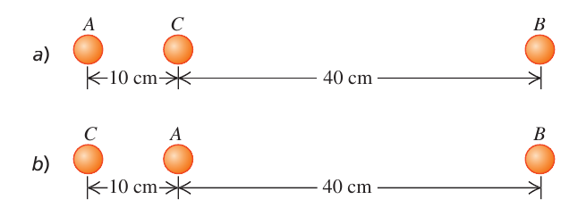
- Modelo. Esferas uniformes ⇒ atraen como partículas en su centro (13.2). Cada fuerza es atractiva: apunta desde $A$ hacia la masa que la ejerce. Por superposición, la fuerza neta es la suma vectorial; al estar todo en una recta basta un eje $x$ (+ a la derecha) y sumar con signo.
- Fuerza de $C$ en los dos casos ($0{,}10$ m): $F_C=\dfrac{(6{,}67\times10^{-11})(2{,}00)(2{,}00)}{(0{,}10)^2}=2{,}67\times10^{-8}$ N.
- a) $C$ y $B$ están las dos a la derecha de $A$ ⇒ las dos fuerzas van hacia $+x$. $r_{AB}=0{,}10+0{,}40=0{,}50$ m ⇒ $F_B=\dfrac{G(4{,}00)}{0{,}50^2}=1{,}07\times10^{-9}$ N. Neta: $2{,}67\times10^{-8}+0{,}107\times10^{-8}=\mathbf{2{,}8\times10^{-8}\ N}$ hacia la derecha.
- b) Ahora $C$ está a la izquierda ($-x$) y $B$ a la derecha a $r_{AB}=0{,}40$ m: $F_B=\dfrac{G(4{,}00)}{0{,}40^2}=1{,}67\times10^{-9}$ N. Neta: $-2{,}67\times10^{-8}+0{,}167\times10^{-8}=-2{,}50\times10^{-8}$ N ⇒ $2{,}5\times10^{-8}$ N hacia la izquierda (hacia $C$).
- Interpretación. Domina siempre la masa cercana: a una distancia 4 o 5 veces mayor la fuerza es 16 o 25 veces menor ($1/r^2$).
Sumar módulos sin mirar el sentido (en b se restan); medir $r_{AB}$ como 0,40 m en el caso a) (son 0,50 m).
E2 — Ejercicio 13.11: altura a la que $g$ se reduce a la décima parte E U p.425
¿A qué distancia sobre la superficie terrestre la aceleración debida a la gravedad es de 0,980 m/s², si en la superficie tiene una magnitud de 9,80 m/s²?
- Idea. Fuera de la Tierra $g(r)=\dfrac{Gm_T}{r^2}$, con $r$ medido desde el centro (13.5 dividida entre $m$).
- Cociente (así no hacen falta ni $G$ ni $m_T$): $\dfrac{g(r)}{g(R_T)}=\left(\dfrac{R_T}{r}\right)^2=\dfrac{0{,}980}{9{,}80}=\dfrac1{10}$ ⇒ $r=\sqrt{10}\,R_T=3{,}16R_T$.
- Altura sobre la superficie: $h=r-R_T=(\sqrt{10}-1)R_T=2{,}162\times6{,}37\times10^6=\mathbf{1{,}38\times10^7\ m}$ (13 800 km, unas dos veces el radio terrestre).
Usar $h$ en lugar de $r$ en $Gm_T/r^2$, o creer que $g$ se divide entre 10 a 10 radios de distancia (es a $\sqrt{10}$ radios).
E3 — Ejercicio 13.13: Titania, gravedad y densidad media E U p.425
Titania, la luna más grande de Urano, tiene $\tfrac18$ del radio terrestre y $\tfrac1{1700}$ de la masa de la Tierra. a) Calcula la aceleración debida a la gravedad en su superficie. b) Obtén la densidad media de Titania (es menor que la densidad de las rocas, lo cual es evidencia de que Titania está constituida principalmente por hielo).
- a) Escalado. $g=GM/R^2$. Con $M=m_T/1700$ y $R=R_T/8$: $g_{Ti}=\dfrac{G(m_T/1700)}{(R_T/8)^2}=\dfrac{64}{1700}\dfrac{Gm_T}{R_T^2}=0{,}0376\,g_T$.
- Número: $g_{Ti}=0{,}0376\times9{,}80=\mathbf{0{,}37\ m/s^2}$. Dos efectos opuestos: menos masa ($\div1700$) baja $g$; menor radio ($\times64$ por el cuadrado) lo sube; gana la masa.
- b) Densidad media: $\rho=\dfrac{M}{\tfrac43\pi R^3}$ ⇒ $\dfrac{\rho_{Ti}}{\rho_T}=\dfrac{1/1700}{(1/8)^3}=\dfrac{512}{1700}=0{,}301$ ⇒ $\rho_{Ti}=0{,}301\times5500=\mathbf{1{,}7\times10^3\ kg/m^3}$.
- Interpretación. Las rocas tienen entre 2000 y 3300 kg/m³ y el hielo, unos 920 kg/m³: Titania es en buena parte hielo.
Elevar al cuadrado la razón de masas, o usar $(1/8)$ sin elevar al cuadrado (o al cubo para la densidad).
E4 — Ejercicio 13.17: rapidez de escape de Marte y de Júpiter E U p.426
Usa los resultados del ejemplo 13.5 para calcular la rapidez de escape de una nave a) desde la superficie de Marte y b) desde la superficie de Júpiter. Usa los datos del apéndice. c) ¿Por qué la rapidez de escape de la nave es independiente de su masa?
- Fórmula (ejemplo 13.5): conservación de la energía entre la superficie ($K_1=\tfrac12mv^2$, $U_1=-GMm/R$) y el infinito con rapidez nula ($K_2=U_2=0$) ⇒ $v_{esc}=\sqrt{2GM/R}$.
- Datos (Apéndice G): Marte $M=6{,}42\times10^{23}$ kg, $R=3{,}39\times10^6$ m; Júpiter $M=1{,}90\times10^{27}$ kg, $R=6{,}99\times10^7$ m.
- a) $v=\sqrt{2(6{,}67\times10^{-11})(6{,}42\times10^{23})/(3{,}39\times10^6)}=\mathbf{5{,}03\times10^3\ m/s}$.
- b) $v=\sqrt{2(6{,}67\times10^{-11})(1{,}90\times10^{27})/(6{,}99\times10^7)}=\mathbf{6{,}02\times10^4\ m/s}$.
- c) $K$ y $U$ son ambas proporcionales a la masa $m$ de la nave: en $\tfrac12mv^2=GMm/R$ la $m$ se simplifica. Solo importan $M$ y $R$ del planeta.
- Comparación. Tierra: $1{,}12\times10^4$ m/s. Marte $\lt$ Tierra $\lt$ Júpiter.
Olvidar el 2 (eso da la rapidez de una órbita rasante, $\sqrt{GM/R}$), o usar el diámetro en lugar del radio.
E5 — Ejercicio 13.19: $g$ a partir de la rapidez de escape E U p.426
Un planeta que orbita una estrella distante tiene un radio de $3{,}24\times10^6$ m. La rapidez de escape de un objeto lanzado desde la superficie de este planeta es de $7{,}65\times10^3$ m/s. ¿Cuál es la aceleración debida a la gravedad en la superficie del planeta?
- Dos ecuaciones, una incógnita auxiliar ($M$). Escape: $\tfrac12mv^2-\dfrac{GMm}{R}=0$ ⇒ $GM=\tfrac12Rv^2$. Gravedad superficial: $g=\dfrac{GM}{R^2}$.
- Eliminar $GM$ (no hace falta conocer $G$ ni $M$ por separado): $g=\dfrac{\tfrac12Rv^2}{R^2}=\dfrac{v^2}{2R}$.
- Número: $g=\dfrac{(7{,}65\times10^3)^2}{2(3{,}24\times10^6)}=\mathbf{9{,}03\ m/s^2}$ (parecida a la terrestre: razonable para un planeta rocoso).
- Extra: $M=\dfrac{Rv^2}{2G}=1{,}42\times10^{24}$ kg.
Calcular primero $M$ con muchos decimales y arrastrar errores, o confundir $v^2/(2R)$ con $v^2/R$.
E6 — Problema 13.61: martillo que cae desde una altura no pequeña E U p.428
Un martillo de masa $m$ se deja caer del reposo desde una altura $h$ arriba de la superficie terrestre, no necesariamente pequeña en comparación con el radio $R_T$ de la Tierra. Despreciando la resistencia del aire, deduce una expresión para la rapidez $v$ del martillo cuando llega a la superficie terrestre. Tu expresión deberá incluir $h$, $R_T$ y $m_T$.
- Por qué no vale $v=\sqrt{2gh}$: supone $g$ constante; si $h$ no es pequeña, $g$ disminuye con la altura ⇒ hay que usar $U=-Gm_Tm/r$.
- Conservación de la energía (solo trabaja la gravedad): punto 1, $r_1=R_T+h$, $K_1=0$; punto 2, $r_2=R_T$, $K_2=\tfrac12mv^2$.
- $0-\dfrac{Gm_Tm}{R_T+h}=\tfrac12mv^2-\dfrac{Gm_Tm}{R_T}$ ⇒ $v^2=2Gm_T\left(\dfrac1{R_T}-\dfrac1{R_T+h}\right)=\dfrac{2Gm_Th}{R_T(R_T+h)}$.
- Resultado: $v=\sqrt{\dfrac{2Gm_Th}{R_T(R_T+h)}}$.
- Comprobaciones de límites. $h\ll R_T$ ⇒ $v^2\approx2(Gm_T/R_T^2)h=2gh$ ✓ (con $h=1$ km las dos fórmulas difieren en menos del 0,01 %). $h\to\infty$ ⇒ $v\to\sqrt{2Gm_T/R_T}=1{,}12\times10^4$ m/s, la rapidez de escape (es el proceso inverso de escapar). Con $h=R_T$: $v=\sqrt{Gm_T/R_T}=7{,}91$ km/s, mientras que $\sqrt{2gh}$ daría 11,2 km/s (¡un 41 % más!).
Poner $r_1=h$ (falta sumar $R_T$), o usar $mgh$ cuando $h$ es grande.
E7 — Ejercicio 13.21: satélite a 890 km de altura E U p.426
Para que un satélite tenga una órbita circular de 890 km arriba de la superficie terrestre, a) ¿qué rapidez orbital debe tener? y b) ¿cuál es el periodo de la órbita (en horas)?
- Radio de la órbita (desde el centro): $r=R_T+h=6{,}37\times10^6+0{,}89\times10^6=7{,}26\times10^6$ m.
- Por qué $v=\sqrt{Gm_T/r}$. La única fuerza es la gravedad y hace de fuerza centrípeta: $\dfrac{Gm_Tm}{r^2}=\dfrac{mv^2}{r}$ (13.10).
- a) $v=\sqrt{\dfrac{(6{,}67\times10^{-11})(5{,}97\times10^{24})}{7{,}26\times10^6}}=\mathbf{7{,}41\times10^3\ m/s}$.
- b) $T=\dfrac{2\pi r}{v}=\dfrac{2\pi(7{,}26\times10^6)}{7406}=6{,}16\times10^3$ s $=\mathbf{1{,}71\ h}$ (13.12).
- Coherencia. Más alto que el satélite del ejemplo 13.6 (300 km: 7730 m/s, 90,4 min) ⇒ más lento y con más periodo ✓. La aceleración $v^2/r=7{,}55$ m/s² es el valor de $g$ a esa altura.
Usar $h$ como radio de la órbita.
E8 — Problema 13.49: satélites geosíncronos E U p.428
Muchos satélites se mueven en un círculo en el plano ecuatorial de la Tierra y están a tal altura que siempre permanecen sobre el mismo punto. a) Determina la altitud de estos satélites sobre la superficie terrestre (una órbita así se llama geosíncrona o geoestacionaria). b) Explica, con un dibujo, por qué las señales de radio de esos satélites no pueden llegar directamente a receptores terrestres situados a más de 81,3° de latitud norte.
- Condición. Para estar siempre sobre el mismo punto, el satélite debe dar una vuelta en el mismo tiempo que la Tierra gira sobre sí misma: $T\approx1$ día $=8{,}64\times10^4$ s (y moverse en el plano del ecuador, en el mismo sentido).
- Despejar $r$ de la 3.ª ley para órbita circular (13.12): $T^2=\dfrac{4\pi^2r^3}{Gm_T}$ ⇒ $r=\left(\dfrac{Gm_TT^2}{4\pi^2}\right)^{1/3}=4{,}22\times10^7$ m.
- Altitud: $h=r-R_T=4{,}22\times10^7-0{,}637\times10^7=\mathbf{3{,}59\times10^7\ m}$ (unos 36 000 km, 5,6 radios terrestres). Rapidez $v=2\pi r/T=3{,}07$ km/s.
- Afinando (opcional). La Tierra da una vuelta respecto a las estrellas en 86 164 s (día sidéreo); con ese $T$ sale $r=4{,}21\times10^7$ m y $h=3{,}58\times10^7$ m: la diferencia es menor del 0,3 %.
- b) Geometría. La señal viaja en línea recta; el satélite solo «ve» los puntos de la Tierra por debajo de la recta tangente trazada desde él. En el triángulo rectángulo centro–punto de tangencia–satélite: $\cos\theta=\dfrac{R_T}{r}=\dfrac{6{,}37\times10^6}{4{,}22\times10^7}=0{,}151$ ⇒ $\theta=81{,}3^\circ$. Los puntos de latitud mayor que $81{,}3^\circ$ quedan «detrás del horizonte» del satélite.
Usar $T$ en horas; olvidar restar $R_T$; confundir la latitud con el ángulo medido desde el polo.
E9 — Problema 13.68: trabajo de los motores para subir de órbita circular E U p.429
Un cohete de masa $5{,}00\times10^3$ kg está en una órbita circular de radio $7{,}20\times10^6$ m alrededor de la Tierra. Los motores se encienden durante un tiempo para aumentar ese radio a $8{,}80\times10^6$ m, con la órbita otra vez circular. a) ¿Cuál es el cambio en la energía cinética del cohete? ¿Aumenta o disminuye? b) ¿Cuál es el cambio en la energía potencial gravitacional? ¿Aumenta o disminuye? c) ¿Cuánto trabajo realizan los motores para cambiar el radio orbital?
- Energías en órbita circular. De (13.10), $K=\tfrac12mv^2=\dfrac{Gm_Tm}{2r}$; $U=-\dfrac{Gm_Tm}{r}$ ⇒ $U=-2K$ y $E=-\dfrac{Gm_Tm}{2r}$ (13.13).
- Valores ($Gm_Tm=1{,}991\times10^{18}$ J·m): $K_1=1{,}383\times10^{11}$ J ($v_1=7{,}44$ km/s), $K_2=1{,}131\times10^{11}$ J ($v_2=6{,}73$ km/s).
- a) $\Delta K=\dfrac{Gm_Tm}{2}\left(\dfrac1{r_2}-\dfrac1{r_1}\right)=\mathbf{-2{,}51\times10^{10}\ J}$: la energía cinética disminuye (más lejos, órbita más lenta).
- b) $\Delta U=Gm_Tm\left(\dfrac1{r_1}-\dfrac1{r_2}\right)=-2\Delta K=\mathbf{+5{,}03\times10^{10}\ J}$: aumenta (se hace menos negativa).
- c) Energía con trabajo de otras fuerzas: $K_1+U_1+W_{mot}=K_2+U_2$ ⇒ $W_{mot}=\Delta K+\Delta U=\Delta E=\mathbf{+2{,}51\times10^{10}\ J}$ (exactamente $-\Delta K$).
- Paradoja aparente. Los motores hacen trabajo positivo… y el cohete termina más lento: el trabajo de los motores más la cinética que se «devuelve» se invierte en energía potencial.
Calcular solo $\Delta U$ como trabajo (olvidar que $K$ baja), o pensar que subir de órbita aumenta la rapidez.
E10 — Ejercicio 13.29: la órbita de Plutón E U p.426
El planeta enano Plutón tiene una órbita elíptica con un semieje mayor de $5{,}91\times10^{12}$ m y excentricidad de 0,249. a) Calcula el periodo orbital de Plutón. Exprésalo en segundos y en años terrestres. b) Durante la órbita de Plutón alrededor del Sol, ¿cuál es su distancia más cercana y más lejana del Sol?
- a) Tercera ley de Kepler (13.17): $T=\dfrac{2\pi a^{3/2}}{\sqrt{Gm_S}}=\dfrac{2\pi(5{,}91\times10^{12})^{3/2}}{\sqrt{(6{,}67\times10^{-11})(1{,}99\times10^{30})}}=\mathbf{7{,}84\times10^9\ s}=7{,}84\times10^9/3{,}156\times10^7=\mathbf{248\ años}$. La excentricidad no interviene.
- b) Perihelio y afelio: el Sol está en un foco, a $ea$ del centro ⇒ $r_{mín}=a(1-e)=5{,}91\times10^{12}(0{,}751)=\mathbf{4{,}44\times10^{12}\ m}$; $r_{máx}=a(1+e)=5{,}91\times10^{12}(1{,}249)=\mathbf{7{,}38\times10^{12}\ m}$. Comprobación: $r_{mín}+r_{máx}=2a$ ✓.
- Interpretación. $r_{máx}/r_{mín}=1{,}66$: mucho más excéntrica que la Tierra ($e=0{,}017$). El periodo coincide con el del Apéndice G (247,9 años) ✓.
Meter $e$ en la tercera ley, o tomar $a$ como la distancia al Sol en todo momento.
E11 — Ejercicio 13.36: el elfo en el polo y en el ecuador E U p.427
Visitas a Santa Claus en el polo norte. Allí observas que el elfo Sneezy, cuando cuelga de una cuerda, produce en ella una tensión de 395,0 N. Si Sneezy cuelga de una cuerda similar mientras reparte regalos en el ecuador, ¿cuál será la tensión? (Recuerda que la Tierra gira alrededor de un eje que pasa por los polos norte y sur.) Usa los datos del apéndice y empieza con un diagrama de cuerpo libre de Sneezy en el ecuador.
- Polo. Sneezy está sobre el eje: no gira, $a=0$ ⇒ $T_{polo}=w_0$ (peso verdadero) $=395{,}0$ N. Masa: $m=w_0/g_0$ con $g_0=Gm_T/R_T^2=9{,}81$ m/s² ⇒ $m=40{,}3$ kg.
- Ecuador: DCL. Peso verdadero $w_0$ hacia el centro, tensión $T$ hacia fuera. Sneezy describe un círculo de radio $R_T$ en un día ⇒ aceleración centrípeta $a_{rad}=v^2/R_T=0{,}0339$ m/s² ($v=465$ m/s).
- Segunda ley (hacia el centro +): $w_0-T=ma_{rad}$ ⇒ $T=w_0-ma_{rad}=395{,}0-40{,}3\times0{,}0339=395{,}0-1{,}37=\mathbf{394\ N}$ (13.27).
- Interpretación. La cuerda soporta un poco menos (0,35 %) porque parte de la atracción se usa en hacer girar a Sneezy.
Sumar $ma_{rad}$ (la tensión saldría mayor), o poner $a_{rad}=g$.
E12 — Ejercicio 13.40: el agujero negro de Markarian 766 E U p.427
En 2005 se anunció el descubrimiento de un enorme agujero negro en la galaxia Markarian 766, con aglomeraciones de materia que lo orbitan una vez cada 27 horas moviéndose a 30 000 km/s. a) ¿A qué distancia están esas aglomeraciones del centro del agujero negro? b) ¿Cuál es la masa del agujero negro, suponiendo órbitas circulares? Exprésala en kilogramos y en masas solares. c) ¿Cuál es el radio de su horizonte de eventos?
- Datos en SI: $v=3{,}00\times10^7$ m/s, $T=27\cdot3600=9{,}72\times10^4$ s.
- a) Cinemática del círculo (13.11): $v=2\pi r/T$ ⇒ $r=\dfrac{vT}{2\pi}=\mathbf{4{,}64\times10^{11}\ m}$ (unas 3 veces la distancia Tierra-Sol).
- b) Dinámica: $T^2=\dfrac{4\pi^2r^3}{GM}$ (13.12 con $M$ la del agujero) ⇒ $M=\dfrac{4\pi^2r^3}{GT^2}=\mathbf{6{,}26\times10^{36}\ kg}=6{,}26\times10^{36}/1{,}99\times10^{30}=\mathbf{3{,}15\times10^6}$ masas solares. (Por otro camino: $M=v^2r/G$, de 13.10, da lo mismo.)
- c) Horizonte de eventos (13.30): $R_S=\dfrac{2GM}{c^2}=\dfrac{2(6{,}67\times10^{-11})(6{,}26\times10^{36})}{(3{,}00\times10^8)^2}=\mathbf{9{,}28\times10^9\ m}$.
- Coherencia. $R_S/r=2v^2/c^2=0{,}02$: la materia orbita a 50 radios de Schwarzschild, fuera del horizonte ✓.
No pasar km/s a m/s o horas a segundos; usar la masa del Sol en lugar de despejar $M$.
E13 — Problema 13.71: planeta con densidad que disminuye linealmente E U p.429
Los planetas no son uniformes en su interior: normalmente son más densos en el centro y su densidad disminuye hacia la superficie. Modela un planeta esféricamente simétrico, del mismo radio que la Tierra, cuya densidad disminuye linealmente con la distancia al centro, de $15{,}0\times10^3$ kg/m³ en el centro a $2{,}0\times10^3$ kg/m³ en la superficie. Determina la aceleración debida a la gravedad en la superficie de ese planeta.
- Idea. Con simetría esférica, en la superficie el planeta atrae como una partícula con toda su masa en el centro (13.2) ⇒ $g=GM/R^2$. El problema se reduce a calcular $M$ cuando la densidad no es constante.
- Densidad: $\rho(r)=\rho_0-br$, con $b=\dfrac{\rho_0-\rho_s}{R}$ (vale $\rho_0$ en $r=0$ y $\rho_s$ en $r=R$).
- Masa por capas. Una capa esférica de radio $r$ y espesor $dr$ tiene volumen $dV=4\pi r^2dr$ y masa $dm=\rho(r)\,4\pi r^2dr$. Integrando: $M=\displaystyle\int_0^R(\rho_0-br)\,4\pi r^2dr=\tfrac43\pi\rho_0R^3-\pi bR^4=\pi R^3\left(\dfrac{\rho_0}{3}+\rho_s\right)$.
- Números: $M=\pi(6{,}37\times10^6)^3(5000+2000)=\mathbf{5{,}68\times10^{24}\ kg}$.
- Gravedad: $g=\dfrac{GM}{R^2}=\pi GR\left(\dfrac{\rho_0}{3}+\rho_s\right)=\mathbf{9{,}34\ m/s^2}$.
- Comprobaciones. Densidad media $M/(\tfrac43\pi R^3)=\tfrac14\rho_0+\tfrac34\rho_s=5250$ kg/m³, parecida a la terrestre (5500): por eso $g$ sale parecida a 9,8. No es la media aritmética $(\rho_0+\rho_s)/2=8500$, porque hay mucho más volumen cerca de la superficie que cerca del centro.
- Extra: dentro del planeta $g(r)=\dfrac{GM(r)}{r^2}=4\pi G\left(\dfrac{\rho_0r}{3}-\dfrac{br^2}{4}\right)$, con un máximo en $r=\dfrac{2\rho_0}{3b}=\dfrac{10}{13}R$ de $g_{máx}=10{,}27$ m/s² (mayor que en la superficie): con un núcleo denso, la gravedad aumenta al bajar un trecho. Compruébalo en el interactivo de §6.
Tomar la densidad media como $(\rho_0+\rho_s)/2$ (da $g=15{,}1$ m/s²), o integrar $\rho\,dr$ sin el factor $4\pi r^2$.
10Chuleta, errores frecuentes y lista de comprobación
| Concepto | Fórmula (ec. de U) |
|---|---|
| Ley de gravitación | $F_g=\dfrac{Gm_1m_2}{r^2}$ (13.1); $G=6{,}67\times10^{-11}$ N·m²/kg²; esferas: masa en el centro (13.2) |
| Peso y $g$ | $w=\dfrac{Gm_Tm}{r^2}$ (13.3, 13.5); $g=\dfrac{GM}{R^2}$ (13.4); $m_T=gR_T^2/G=5{,}96\times10^{24}$ kg; $\rho=M/(\tfrac43\pi R^3)$; a igual densidad $g=\tfrac43\pi G\rho R\propto R$ |
| Energía potencial | $U=-\dfrac{GMm}{r}$ (13.9), $U=0$ en $\infty$; $W_{grav}=GMm\left(\dfrac1{r_2}-\dfrac1{r_1}\right)$ (13.8); cerca del suelo $U\approx mgy$ |
| Conservación y escape | $K_1+U_1=K_2+U_2$; $v_{esc}=\sqrt{2GM/R}$ (Tierra: 11,2 km/s); $E\lt0$ ligado, $E\ge0$ escapa; $r_{máx}=GMm/|E|$ |
| Órbita circular | $v=\sqrt{GM/r}$ (13.10); $T=2\pi r/v=2\pi r^{3/2}/\sqrt{GM}$ (13.11, 13.12); $E=-\dfrac{GMm}{2r}$, $K=-E$, $U=2E$ (13.13); $v_{esc}=\sqrt2\,v_{circ}$ |
| Elipse | $r_p=a(1-e)$, $r_a=a(1+e)$, $r_p+r_a=2a$; en los ápsides $v_pr_p=v_ar_a$; $E=-\dfrac{GMm}{2a}$ |
| Kepler | 1.ª elipse con el Sol en un foco; 2.ª $\dfrac{dA}{dt}=\dfrac{L}{2m}=\text{cte}$ (13.14-13.16); 3.ª $T^2=\dfrac{4\pi^2}{Gm_S}a^3$ (13.17); masa central $M=\dfrac{4\pi^2a^3}{GT^2}$ |
| Dentro de esferas | cascarón: $F=0$ dentro (13.25-13.26); esfera uniforme: $g=g_0\,r/R$ dentro, $g_0(R/r)^2$ fuera; en general solo cuenta $M(r)$ |
| Peso aparente | ecuador $g=g_0-\omega^2R=g_0-4\pi^2R/T^2$ (13.27); polo $g=g_0$; latitud intermedia $\vec g=\vec g_0-\vec a_{rad}$ (13.28); Tierra: $\omega^2R=0{,}0339$ m/s² |
| Agujeros negros | $v_{esc}=\sqrt{2GM/R}=\sqrt{8\pi G\rho/3}\,R$ (13.29); $R_S=2GM/c^2$ (13.30) |
| Datos útiles | $m_T=5{,}97\times10^{24}$ kg; $R_T=6{,}37\times10^6$ m; $g_0=9{,}81$ m/s²; $m_S=1{,}99\times10^{30}$ kg; $c=3{,}00\times10^8$ m/s; 1 año $=3{,}156\times10^7$ s; día sidéreo 86 164 s |
- Medir $r$ desde la superficie en lugar de desde el centro ($r=R+h$).
- Confundir $G$ (constante universal) con $g$ (aceleración local).
- Usar $U=mgh$ cuando la altura no es pequeña frente al radio: para escapar o subir mucho hay que usar $U=-GMm/r$.
- Olvidar el signo menos de $U$ (y el hecho de que $U$ aumenta al alejarse), o mezclar $1/r^2$ (fuerza) con $1/r$ (energía).
- Pensar que los astronautas en órbita «no tienen gravedad» (están en caída libre); o que $g$ se anula a cierta distancia finita.
- En órbita circular: creer que subir de órbita aumenta la rapidez (disminuye) o que la rapidez orbital depende de la masa del satélite.
- En Kepler: meter la excentricidad en la tercera ley (solo cuenta $a$), o usar $r$ en lugar de $a$ en una elipse; olvidar que $v$ es mayor en el perihelio.
- Dentro de un planeta: aplicar $1/r^2$ con la masa total; solo cuenta la masa interior (y en un cascarón, nada).
- Peso aparente: sumar la centrípeta en vez de restarla, o dejar $R$ en km y $T$ en días o horas.
- Rapidez de escape: olvidar el 2 de $2GM/R$ (eso da $\sqrt{GM/R}$, la órbita rasante).
- Sé aplicar $F=Gm_1m_2/r^2$, sumar fuerzas gravitacionales en línea y en 2D, y usar la proporcionalidad $1/r^2$ (§1, E1, ejemplo 13.3).
- Sé calcular $g$ de un planeta con $M$ y $R$, por escalado respecto a la Tierra o con la misma densidad, y la altura a la que $g$ vale una fracción dada (§2, E2, E3, X2).
- Sé usar $U=-GMm/r$ con conservación de la energía: altura máxima, escape, caída desde gran altura (§3, E4, E5, E6, X4, X5).
- Sé explicar la relación entre $mgh$ y $-GMm/r$ y que el trabajo de la gravedad no depende del camino (X5, X3).
- Sé resolver una órbita circular ($v$, $T$, $E$), el trabajo para cambiar de órbita y una órbita geoestacionaria (§4, E7, E8, E9).
- Sé enunciar las tres leyes de Kepler, aplicar $T^2=4\pi^2a^3/(GM)$, hallar perihelio y afelio y justificar con $L$ constante dónde va más rápido el planeta (§5, E10, X6).
- Sé decir qué fuerza hay dentro de una esfera o de un cascarón y calcular $g$ con densidad variable (§6, ejemplo 13.10, E13).
- Sé calcular el peso aparente en el polo y en el ecuador y explicar cuándo la diferencia se nota (§7, E11, X1).
- Sé calcular el radio de Schwarzschild y la masa de un agujero negro a partir de una órbita (§8, E12).
- Sé desarrollar «Ley de Newton de la gravitación», «Energía potencial gravitacional» y «Leyes de Kepler» en una cara, con las cuestiones típicas (X2-X6).